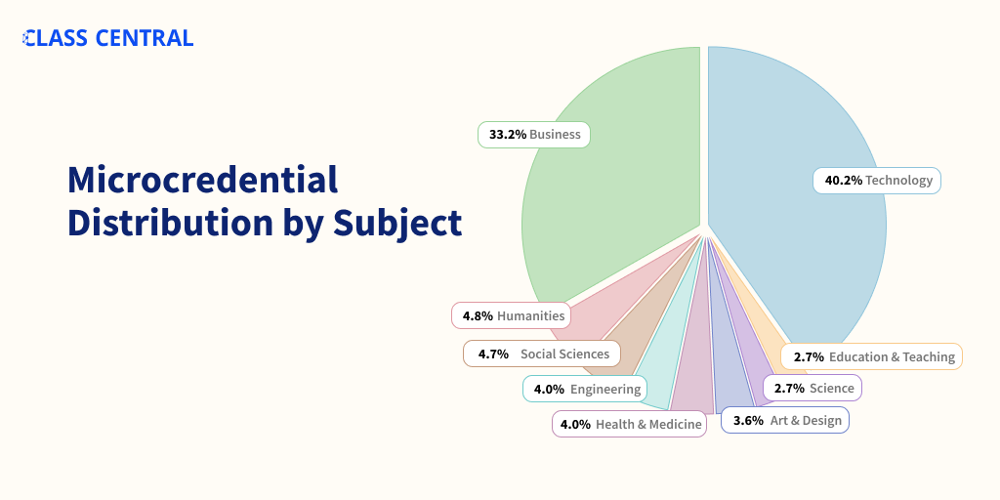

Massive List of MOOC-based Microcredentials
2500 microcredentials from providers like Coursera, edX, FutureLearn, and Udacity.
Microcredentials are part of the higher education trend toward modularity and stackability. They involve combining small, individual learning units into broader, cohesive qualifications. In that sense, they live somewhere in the space between single courses and full degrees.
Class Central has been keeping track of MOOC-based microcredentials since 2013, when edX launched the first microcredential: XSeries. Since then, all major providers have launched their own microcredentials, often trademarking them.
For instance, Coursera packages courses into microcredentials such as Specializations, Professional Certificates, and MasterTracks. And edX, into Professional Certificates, MicroBachelors, or MicroMasters.
In 2018, we analyzed 450 microcredentials and found little consistency between them. Their cost and effort estimates varied widely. In addition, we found there’s as much variability within each microcredential type as across different types.
The hype around microcredentials has subsided a bit in favor of online degrees. But the microcredential offering has continued to grow. By the end of 2021, there were 1500+ microcredentials. Now, in 2022, there are 2500 microcredentials, with Coursera’s Specializations making up almost one-third of them.
A Class Central analysis shows that ~75% of the microcredentials are in business and technology.

You can find microcredentials in Class Central’s catalog the same way you do courses. Below is a list of the different types of microcredentials broken down by provider. Click on a link to jump to the relevant section.
| Microcredentials on the Market Today | |
| Platform | Microcredentials |
| Coursera | Specialization, MasterTrack, Professional Certificate |
| edX | XSeries, MicroBachelors, MicroMasters, Professional Certificate, Professional Education |
| Udacity | Nanodegree |
| FutureLearn | Program, ExpertTrack, Microcredential |
| Kadenze | Program |
| LinkedIn Learning | Path |
Coursera Specialization (818)
- Python for Everybody from University of Michigan ★★★★★(406)
- Computational Social Science from University of California, Davis ★★★★★(105)
- Practical Data Science with MATLAB from MathWorks ★★★★★(31)
- Big Data from University of California, San Diego ★★☆☆☆(18)
- Digital Marketing from University of Illinois at Urbana-Champaign ★★★★★(11)
- Data Science from Johns Hopkins University ★★★★☆(10)
- Executive Data Science from Johns Hopkins University ★★★★★(4)
- Project Management Principles and Practices from University of California, Irvine ★★★★☆(4)
- TESOL Certificate, Part 1: Teach English Now! from Arizona State University ★★★★☆(4)
- Software Design and Architecture from University of Alberta ★★★★★(4)
- Responsive Website Development and Design from Goldsmiths, University of London ★★★☆☆(4)
- Excel to MySQL: Analytic Techniques for Business from Duke University ★★★☆☆(3)
- Business Foundations from University of Pennsylvania ★★★★☆(2)
- Biostatistics in Public Health from Johns Hopkins University ★★★★★(2)
- Academic English: Writing from University of California, Irvine ★★☆☆☆(2)
- Learn English: Advanced Grammar and Punctuation from University of California, Irvine ★★★★★(2)
- FinTech: Finance Industry Transformation and Regulation from The Hong Kong University of Science and Technology ★★★★★(2)
- Cybersecurity from University of Maryland, College Park ★★★★★(2)
- Computer Security and Systems Management from University of Colorado System ★★★★★(2)
- Epidemiology for Public Health from Imperial College London ★★★★★(2)
- Machine Learning for Trading from Google Cloud ★★★☆☆(2)
- Cisco Networking Basics from Cisco ★★★★★(2)
- Real-World Product Management from Advancing Women in Tech ★★★★★(2)
- Healthcare Law from University of Pennsylvania ★★★★☆(1)
- Robotics from University of Pennsylvania ★☆☆☆☆(1)
- Python 3 Programming from University of Michigan ★★★☆☆(1)
- Good with Words: Writing and Editing from University of Michigan ★★★★★(1)
- Epidemiology in Public Health Practice from Johns Hopkins University ★★★★★(1)
- Algebra: Elementary to Advanced from Johns Hopkins University ★★★★★(1)
- GPU Programming from Johns Hopkins University ★★★★★(1)
- An Introduction to Programming the Internet of Things (IOT) from University of California, Irvine ★★★★★(1)
- Virtual Teacher from University of California, Irvine ★★★★☆(1)
- Career Success from University of California, Irvine ★★★★☆(1)
- Conflict Management from University of California, Irvine ★☆☆☆☆(1)
- Use Tableau for Your Data Science Workflow from University of California, Irvine ★★☆☆☆(1)
- Bioinformatics from University of California, San Diego ★★★★★(1)
- Drug Development Product Management from University of California, San Diego ★★★★☆(1)
- Improve Your English Communication Skills from Georgia Institute of Technology ★★★★★(1)
- Machine Learning from University of Washington ★☆☆☆☆(1)
- Data Mining from University of Illinois at Urbana-Champaign ★★★★★(1)
- Strategic Leadership and Management from University of Illinois at Urbana-Champaign ★★★★★(1)
- iOS App Development with Swift from University of Toronto ★★★★★(1)
- Agile Development from University of Virginia ★★★★☆(1)
- Business Strategy from University of Virginia ★★★★★(1)
- Chino básico: Lenguaje y cultura empresarial from Arizona State University ★★★☆☆(1)
- Search Engine Optimization (SEO) from University of California, Davis ★★★★★(1)
- Professional Skills for the Workplace from University of California, Davis ★★☆☆☆(1)
- Photography Basics and Beyond: From Smartphone to DSLR from Michigan State University ★★★★★(1)
- Social Media Marketing from Northwestern University ★★★★★(1)
- Essentials of Corporate Finance from University of Melbourne ★★★☆☆(1)
- Engineering Project Management from Rice University ★★★★★(1)
- Introduction to Scripting in Python from Rice University ★★★★★(1)
- Game Design: Art and Concepts from California Institute of the Arts ★★★★☆(1)
- UI / UX Design from California Institute of the Arts ★★★★★(1)
- Human Resource Management: HR for People Managers from University of Minnesota ★★★★★(1)
- Investment Management from University of Geneva ★★★★☆(1)
- Entrepreneurship: Launching an Innovative Business from University of Maryland, College Park ★★★★☆(1)
- Palliative Care: It’s Not Just Hospice Anymore from University of Colorado System ★★★★★(1)
- Fundamentals of Computer Network Security from University of Colorado System ★★★☆☆(1)
- Songwriting: Writing, Arranging, and Producing Music from Berklee College of Music ★★★★★(1)
- Management Consulting from Emory University ★★★☆☆(1)
- Strategic Business Analytics from ESSEC Business School ★★★★☆(1)
- Data Analysis and Interpretation from Wesleyan University ★★★★★(1)
- Mathematics for Machine Learning from Imperial College London ★★★☆☆(1)
- Reinforcement Learning from University of Alberta ★★★★★(1)
- Aprende a programar con Python from Universidad Austral ★★★★☆(1)
- Supply Chain Management from Rutgers University ★☆☆☆☆(1)
- Introduction to Cyber Security from New York University (NYU) ★★★★★(1)
- Strategic Leadership: Impact, Change, and Decision-Making from Dartmouth College ★★★★★(1)
- Strategic Management and Innovation from Copenhagen Business School ★★★★★(1)
- Introduction to Computer Science and Programming from Goldsmiths, University of London ★★★★☆(1)
- Practical Data Science on the AWS Cloud from DeepLearning.AI ★★★★★(1)
- Sales Operations/Management from West Virginia University ★★★★★(1)
- Sales Training for High Performing Teams from HubSpot ★★★★★(1)
- Image Processing for Engineering and Science from MathWorks ★★★★★(1)
- Real-World Cloud Product Management from Advancing Women in Tech ★★★★★(1)
- Machine Learning from DeepLearning.AI
- Probabilistic Graphical Models from Stanford University
- Algorithms from Stanford University
- AI in Healthcare from Stanford University
- Palliative Care Always from Stanford University
- Food Sustainability, Mindful Eating, and Healthy Cooking from Stanford University
- Object Oriented Programming in Java from Duke University
- Foundations of Positive Psychology from University of Pennsylvania
- 商务基础 (中文版) from University of Pennsylvania
- Fundamentos Empresariales from University of Pennsylvania
- Finance & Quantitative Modeling for Analysts from University of Pennsylvania
- Culture-Driven Team Building from University of Pennsylvania
- Fintech: Foundations & Applications of Financial Technology from University of Pennsylvania
- Intellectual Property Law from University of Pennsylvania
- Achieving Personal and Professional Success from University of Pennsylvania
- Business Strategies for A Better World from University of Pennsylvania
- Regulatory Compliance from University of Pennsylvania
- Business and Financial Modeling from University of Pennsylvania
- The Business of Health Care from University of Pennsylvania
- Business Analytics from University of Pennsylvania
- Entrepreneurship from University of Pennsylvania
- Introduction to Finance and Accounting from University of Pennsylvania
- Introduction to Programming with Python and Java from University of Pennsylvania
- Omnichannel Retail Strategy from University of Pennsylvania
- The Materiality of ESG Factors from University of Pennsylvania
- AI For Business from University of Pennsylvania
- Data Structures and Algorithms from Higher School of Economics
- Financial Technology (Fintech) Innovations from University of Michigan
- Leading People and Teams from University of Michigan
- Anatomy from University of Michigan
- Web Applications for Everybody from University of Michigan
- Statistics with Python from University of Michigan
- Web Design for Everybody: Basics of Web Development & Coding from University of Michigan
- Foundational Finance for Strategic Decision Making from University of Michigan
- User Experience Research and Design from University of Michigan
- Applied Data Science with Python from University of Michigan
- Django for Everybody from University of Michigan
- Extended Reality for Everybody from University of Michigan
- The Influence of Social Determinants on Health from University of Michigan
- PostgreSQL for Everybody from University of Michigan
- Exploring Piano Literature: The Piano Sonata from University of Michigan
- Sports Performance Analytics from University of Michigan
- Impacts of the Environment on Global Public Health from University of Michigan
- Translational Science from University of Michigan
- Digital Technologies and the Future of Manufacturing from University of Michigan
- Addressing Racial Health Inequity in Healthcare from University of Michigan
- Good with Words: Speaking and Presenting from University of Michigan
- Total Data Quality from University of Michigan
- Data Analytics in the Public Sector with R from University of Michigan
- Ruby on Rails Web Development from Johns Hopkins University
- Patient Safety from Johns Hopkins University
- Health Informatics from Johns Hopkins University
- Mastering Software Development in R from Johns Hopkins University
- Genomic Data Science from Johns Hopkins University
- Data Science: Foundations using R from Johns Hopkins University
- Foundations of Global Health from Johns Hopkins University
- Data Science: Statistics and Machine Learning from Johns Hopkins University
- Neuroscience and Neuroimaging from Johns Hopkins University
- Advanced Statistics for Data Science from Johns Hopkins University
- Precalculus through Data and Modelling from Johns Hopkins University
- Data Literacy from Johns Hopkins University
- Data Visualization & Dashboarding with R from Johns Hopkins University
- Healthcare IT Support from Johns Hopkins University
- Tidyverse Skills for Data Science in R from Johns Hopkins University
- Differential Calculus through Data and Modeling from Johns Hopkins University
- Integral Calculus through Data and Modeling from Johns Hopkins University
- Teaching Writing from Johns Hopkins University
- Cancer Biology from Johns Hopkins University
- iOS Development for Creative Entrepreneurs from University of California, Irvine
- Project Management & Other Tools for Career Development from University of California, Irvine
- Teach English: Intermediate Grammar from University of California, Irvine
- Learn English: Advanced Academic Speaking and Listening from University of California, Irvine
- Éxito Profesional from University of California, Irvine
- Programming with Google Go from University of California, Irvine
- Esports from University of California, Irvine
- UCI Project Management from University of California, Irvine
- Learn English: Intermediate Grammar from University of California, Irvine
- Blockchain from University of California, Irvine
- The Pronunciation of American English from University of California, Irvine
- Data Science Fundamentals from University of California, Irvine
- Salesforce Fundamentals from University of California, Irvine
- E-Marketing from University of California, Irvine
- Introduction to Cybersecurity & Risk Management from University of California, Irvine
- Introduction to Financial Accounting: The Accounting Cycle from University of California, Irvine
- IELTS Preparation from University of California, Irvine
- TOEFL Preparation from University of California, Irvine
- Learn English: Beginning Grammar from University of California, Irvine
- Introduction to Business from University of California, Irvine
- Essential English for University Success from University of California, Irvine
- Learn English: Writing Effectively with Complex Sentences from University of California, Irvine
- Database Design and Operational Business Intelligence from University of California, Irvine
- Essential English for Business Professionals from University of California, Irvine
- Introduction to Computer Information Systems from University of California, Irvine
- Journey of the Universe: A Story for Our Times from Yale University
- Climate Change and Health: From Science to Action from Yale University
- Religions and Ecology: Restoring the Earth Community from Yale University
- Construction Management from Columbia University
- Social Policy for Social Services & Health Practitioners from Columbia University
- First Principles of Computer Vision from Columbia University
- Financial Engineering and Risk Management from Columbia University
- Internet of Things and AI Cloud from University of California, San Diego
- Object Oriented Java Programming: Data Structures and Beyond from University of California, San Diego
- Introduction to Discrete Mathematics for Computer Science from University of California, San Diego
- Computational Thinking & Block Programming in K-12 Education from University of California, San Diego
- Interaction Design from University of California, San Diego
- Python Data Products for Predictive Analytics from University of California, San Diego
- Teaching Impacts of Technology in K-12 Education from University of California, San Diego
- Learn to Teach Java from University of California, San Diego
- Introductory C Programming from Duke University
- Java Programming and Software Engineering Fundamentals from Duke University
- Entrepreneurial Finance: Strategy and Innovation from Duke University
- Statistics with R from Duke University
- Introduction to Logic and Critical Thinking from Duke University
- Building Cloud Computing Solutions at Scale from Duke University
- AI Product Management from Duke University
- Data Analysis with R from Duke University
- Python, Bash and SQL Essentials for Data Engineering from Duke University
- Decentralized Finance (DeFi): The Future of Finance from Duke University
- System Issues in Cloud Computing from Georgia Institute of Technology
- Business English Communication Skills from University of Washington
- Data Science at Scale from University of Washington
- Dynamic Public Speaking from University of Washington
- Managerial Economics and Business Analysis from University of Illinois at Urbana-Champaign
- Financial Reporting from University of Illinois at Urbana-Champaign
- Professional IQ: Preventing and Solving Problems at Work from University of Illinois at Urbana-Champaign
- Financial Management from University of Illinois at Urbana-Champaign
- Accelerated Computer Science Fundamentals from University of Illinois at Urbana-Champaign
- Fundamentals of Accounting from University of Illinois at Urbana-Champaign
- U.S. Federal Taxation from University of Illinois at Urbana-Champaign
- Cloud Computing from University of Illinois at Urbana-Champaign
- Global Challenges in Business from University of Illinois at Urbana-Champaign
- Innovation: From Creativity to Entrepreneurship from University of Illinois at Urbana-Champaign
- Value Chain Management from University of Illinois at Urbana-Champaign
- Accounting Data Analytics from University of Illinois at Urbana-Champaign
- Introduction to Business Analytics and Information Economics from University of Illinois at Urbana-Champaign
- Hands-on Internet of Things from University of Illinois at Urbana-Champaign
- 3D Printing and Additive Manufacturing from University of Illinois at Urbana-Champaign
- Business Value and Project Management from University of Illinois at Urbana-Champaign
- Professional Success Skills from University of Illinois at Urbana-Champaign
- Business Data Management and Communication from University of Illinois at Urbana-Champaign
- Deep Learning for Healthcare from University of Illinois at Urbana-Champaign
- Business Analytics from University of Illinois at Urbana-Champaign
- Strategic Technology Management from University of Illinois at Urbana-Champaign
- Data-Driven Decision Making (DDDM) from University at Buffalo
- Improving Leadership & Governance in Nonprofit Organizations from State University of New York
- Applied Digital Literacy from State University of New York
- GIS, Mapping, and Spatial Analysis from University of Toronto
- Plant Bioinformatic Methods from University of Toronto
- Self-Driving Cars from University of Toronto
- Gender Analytics: Gender Equity through Inclusive Design from University of Toronto
- IBM & Darden Digital Strategy from University of Virginia
- Pricing Strategy Optimization from University of Virginia
- Coding for Designers, Managers, and Entrepreneurs from University of Virginia
- Agile Development from University of Virginia
- Digital Product Management from University of Virginia
- Entrepreneurship: Growing Your Business from University of Virginia
- Inglés Empresarial from Arizona State University
- TESOL Certificate, Part 2: Teach English Now! from Arizona State University
- 商务英语课程 Business English from Arizona State University
- ELL Success in the Content Classroom: Teacher Toolbox Series from Arizona State University
- Business English from Arizona State University
- Design of Experiments from Arizona State University
- Market Research from University of California, Davis
- Learn Spanish: Basic Spanish Vocabulary from University of California, Davis
- Learn SQL Basics for Data Science from University of California, Davis
- Secure Coding Practices from University of California, Davis
- Coaching Skills for Managers from University of California, Davis
- Health Information Literacy for Data Analytics from University of California, Davis
- Geographic Information Systems (GIS) from University of California, Davis
- Fundraising and Development from University of California, Davis
- Data Visualization with Tableau from University of California, Davis
- JavaScript for Beginners from University of California, Davis
- Management of Multinational and Cross-Cultural Teams from University of California, Davis
- Art for Games from Michigan State University
- How to Start Your Own Business from Michigan State University
- Game Design and Development from Michigan State University
- Become a Journalist: Report the News! from Michigan State University
- Game Design and Development with Unity 2020 from Michigan State University
- Organizational Leadership from Northwestern University
- Modern Robotics: Mechanics, Planning, and Control from Northwestern University
- The Art of Sales: Mastering the Selling Process from Northwestern University
- Content Strategy for Professionals from Northwestern University
- Managing Major Engineering Projects from University of Leeds
- Investment and Portfolio Management from Rice University
- Business Statistics and Analysis from Rice University
- Fundamentals of Immunology from Rice University
- Leadership Development for Engineers from Rice University
- Communication Skills for Engineers from Rice University
- Fundamentals of Computing from Rice University
- Parallel, Concurrent, and Distributed Programming in Java from Rice University
- Introduction to Mechanics from Rice University
- Fundamentals of Immunology from Rice University
- Introduction to Electricity and Magnetism from Rice University
- Organizational Leadership in Diversity, Equity & Inclusion from Rice University
- Medical Terminology from Rice University
- Mindfulness and Well-being from Rice University
- 程序设计与算法 from Peking University
- Learn Chinese: HSK Test Preparation from Peking University
- Graphic Design from California Institute of the Arts
- Building Your Freelancing Career from California Institute of the Arts
- Software Development Lifecycle from University of Minnesota
- Integrative Health and Medicine from University of Minnesota
- Recommender Systems from University of Minnesota
- Information Systems from University of Minnesota
- User Interface Design from University of Minnesota
- Nursing Informatics Leadership from University of Minnesota
- Healthcare Marketplace from University of Minnesota
- Software Testing and Automation from University of Minnesota
- Integrative Nursing from University of Minnesota
- Cybersecurity in the Cloud from University of Minnesota
- User Interface Design from University of Minnesota
- Analytics for Decision Making from University of Minnesota
- Social Determinants of Health: Data to Action from University of Minnesota
- Full Stack Web and Multiplatform Mobile App Development from The Hong Kong University of Science and Technology
- Business English for Non-Native Speakers from The Hong Kong University of Science and Technology
- Full-Stack Web Development with React from The Hong Kong University of Science and Technology
- Full Stack Web Development with Angular from The Hong Kong University of Science and Technology
- Protecting Business Innovation from The Hong Kong University of Science and Technology
- Mathematics for Engineers from The Hong Kong University of Science and Technology
- Software Engineering from The Hong Kong University of Science and Technology
- Android App Development from Vanderbilt University
- MATLAB Programming for Engineers and Scientists from Vanderbilt University
- Interviewing and Resume Writing in English from University of Maryland, College Park
- Survey Data Collection and Analytics from University of Maryland, College Park
- Corporate Entrepreneurship: Innovating within Corporations from University of Maryland, College Park
- Product Ideation, Design, and Management from University of Maryland, College Park
- Legal Aspects of Entrepreneurship from University of Maryland, College Park
- The Teacher and Social and Emotional Learning (SEL) from University of Colorado Boulder
- Developing Industrial Internet of Things from University of Colorado Boulder
- Semiconductor Devices from University of Colorado Boulder
- Power Electronics from University of Colorado Boulder
- Advanced Business Analytics from University of Colorado Boulder
- Optical Engineering from University of Colorado Boulder
- Active Optical Devices from University of Colorado Boulder
- Medical Cannabis: The Health Effects of THC and CBD from University of Colorado Boulder
- Spacecraft Dynamics and Control from University of Colorado Boulder
- Mind and Machine from University of Colorado Boulder
- Statistical Thermodynamics from University of Colorado Boulder
- Excel/VBA for Creative Problem Solving from University of Colorado Boulder
- Digital Advertising Strategy from University of Colorado Boulder
- Leading Sustainable Community Transformation from University of Colorado Boulder
- Graphic Design Elements for Non-Designers from University of Colorado Boulder
- Embedding Sensors and Motors from University of Colorado Boulder
- Effective Communication: Writing, Design, and Presentation from University of Colorado Boulder
- Biology Everywhere from University of Colorado Boulder
- Power Electronics from University of Colorado Boulder
- FPGA Design for Embedded Systems from University of Colorado Boulder
- Animals and Society from University of Colorado Boulder
- Arctic Climate, Environ. & Geographies of a Changing North from University of Colorado Boulder
- Exploring Our Responses to Climate Change from University of Colorado Boulder
- Real-Time Embedded Systems from University of Colorado Boulder
- Modeling and Control of Power Electronics from University of Colorado Boulder
- Embedded Interface Design from University of Colorado Boulder
- International Business from University of Colorado Boulder
- Everyday Excel from University of Colorado Boulder
- Caring for Others from University of Colorado Boulder
- Fandom and Popular Culture in the Digital Age from University of Colorado Boulder
- Vital Skills for Data Science from University of Colorado Boulder
- Data Science Foundations: Data Structures and Algorithms from University of Colorado Boulder
- Statistical Modeling for Data Science Applications from University of Colorado Boulder
- Renewable Energy from University of Colorado Boulder
- Quantum Mechanics for Engineers from University of Colorado Boulder
- Expressway to Data Science: Essential Math from University of Colorado Boulder
- Machine Learning: Theory and Hands-on Practice with Python from University of Colorado Boulder
- Data Mining Foundations and Practice from University of Colorado Boulder
- Databases for Data Scientists from University of Colorado Boulder
- Advanced Spacecraft Dynamics and Control from University of Colorado Boulder
- Data Science Methods for Quality Improvement from University of Colorado Boulder
- Introduction to Public Relations and the Media from University of Colorado Boulder
- Data Science Foundations: Statistical Inference from University of Colorado Boulder
- Text Marketing Analytics from University of Colorado Boulder
- Musician’s Professional Toolbox: Your Portfolio Career from University of Colorado Boulder
- Anti-Racism from University of Colorado Boulder
- Expressway to Data Science: R Programming and Tidyverse from University of Colorado Boulder
- Finance for Technical Managers from University of Colorado Boulder
- Project Management from University of Colorado Boulder
- Principles of Leadership: Leading Oneself from University of Colorado Boulder
- Expressway to Data Science: Python Programming from University of Colorado Boulder
- Globalización, Crecimiento Económico y Estabilidad from IE Business School
- Globalization, Economic Growth and Stability from IE Business School
- Marketing Mix Implementation from IE Business School
- Implementación del Marketing Mix from IE Business School
- Estrategia de marketing from IE Business School
- Branding: The Creative Journey from IE Business School
- Marketing Strategy from IE Business School
- Scale Up Your Startup from IE Business School
- The Journey to Diversity, Inclusion and Belonging from IE Business School
- School Health for Children and Adolescents from University of Colorado System
- Requirements Engineering: Secure Software Specifications from University of Colorado System
- Newborn Baby Care from University of Colorado System
- Become an EMT from University of Colorado System
- Become a Sustainable Business Change Agent from University of Colorado System
- Advanced System Security Design from University of Colorado System
- Cybersecurity for Business from University of Colorado System
- Computer Communications from University of Colorado System
- Computational Thinking with Beginning C Programming from University of Colorado System
- Algorithms for Battery Management Systems from University of Colorado System
- Secure Software Design from University of Colorado System
- Clinical Data Science from University of Colorado System
- Introduction to Applied Cryptography from University of Colorado System
- C# Programming for Unity Game Development from University of Colorado System
- Applied Cryptography from University of Colorado System
- Homeland Security and Cybersecurity from University of Colorado System
- Data Warehousing for Business Intelligence from University of Colorado System
- C# Programming for Unity Game Development from University of Colorado System
- Agile Leadership from University of Colorado System
- C++ Programming for Unreal Game Development from University of Colorado System
- Functional Programming in Scala from École Polytechnique Fédérale de Lausanne
- Digital Signal Processing from École Polytechnique Fédérale de Lausanne
- Electronic Music Production from Berklee College of Music
- The DIY Musician from Berklee College of Music
- Music Business from Berklee College of Music
- O Músico Contemporâneo from Berklee College of Music
- Developing Your Musicianship from Berklee College of Music
- The Business of Music Production from Berklee College of Music
- El Músico Moderno from Berklee College of Music
- Music Production from Berklee College of Music
- Electronic Music Production from Berklee College of Music
- The Singer Songwriter from Berklee College of Music
- How to Play Guitar from Berklee College of Music
- Music Education for Teachers from Berklee College of Music
- Data Visualization: Analisi dei dati con Tableau from University of Naples Federico II
- Data Science con Python e R from University of Naples Federico II
- Foundations of Marketing Analytics from Emory University
- Qualitative Research Design and Methods for Public Health from Emory University
- Marketing Channel Strategy & B2B2C Routes to Market from Emory University
- Negotiation, Mediation and Conflict Resolution from ESSEC Business School
- L’investissement à impact, la finance qui change le monde from ESSEC Business School
- Hotel Management: Distribution, Revenue and Demand Management from ESSEC Business School
- Creative Writing from Wesleyan University
- Memoir and Personal Essay: Write About Yourself from Wesleyan University
- Abnormal Psychology from Wesleyan University
- CAD/BIM技術與應用 from National Taiwan University
- Foundations of Public Health Practice from Imperial College London
- Statistical Analysis with R for Public Health from Imperial College London
- Advanced App Development in Android from Imperial College London
- Global Disease Masterclass from Imperial College London
- Infectious Disease Modelling from Imperial College London
- Health Systems Development from Imperial College London
- Global Health Innovations from Imperial College London
- TensorFlow 2 for Deep Learning from Imperial College London
- Digital Health from Imperial College London
- Participatory Approaches in Public Health from Imperial College London
- Quality Improvement in Healthcare from Imperial College London
- Estrategias de Negociación from Universidad Nacional Autónoma de México
- Finanzas corporativas from Universidad Nacional Autónoma de México
- Database systems from Universidad Nacional Autónoma de México
- Habilidades Gerenciales from Universidad Nacional Autónoma de México
- Evaluación educativa from Universidad Nacional Autónoma de México
- Tecnología musical con software libre from Universidad Nacional Autónoma de México
- Desarrollo de aplicaciones móviles con Android from Universidad Nacional Autónoma de México
- Introducción a la inteligencia artificial from Universidad Nacional Autónoma de México
- Creatividad, diseño e innovación: Técnicas y herramientas from Universidad Nacional Autónoma de México
- Fundamentos Estratégicos Empresariales from Universidad Nacional Autónoma de México
- Innovación digital from Universidad Nacional Autónoma de México
- Learn English from Tsinghua University
- Data Structures and Algorithms from Tsinghua University
- Marketing con Redes Sociales from Tecnológico de Monterrey
- Administración de Proyectos: Principios Básicos from Tecnológico de Monterrey
- Análisis de Datos para la toma de decisiones from Tecnológico de Monterrey
- Diseño Instruccional: Aprendizaje activo y Pedagogía digital from Tecnológico de Monterrey
- Leading a Family Business from Tecnológico de Monterrey
- Innovación y emprendimiento from Tecnológico de Monterrey
- Innovation and entrepreneurship from Tecnológico de Monterrey
- Leadership and Critical Thinking from Tecnológico de Monterrey
- Empresas Familiares from Tecnológico de Monterrey
- Liderazgo y habilidades de negociación from Tecnológico de Monterrey
- Liderazgo y Pensamiento Crítico from Tecnológico de Monterrey
- Leadership and Negotiation Skills from Tecnológico de Monterrey
- Gestión de Proyectos from Tecnológico de Monterrey
- Fundamentos de la Psicología from Tecnológico de Monterrey
- Compromiso del paciente: resultados clínicos satisfactorios from Tecnológico de Monterrey
- La telesalud y telemedicina enfocadas a la atención en salud from Tecnológico de Monterrey
- Lean Six Sigma from Tecnológico de Monterrey
- Analíticas de Marketing Digital from Tecnológico de Monterrey
- Gestión de Marca from Tecnológico de Monterrey
- Planificación y estrategia de marketing digital from Tecnológico de Monterrey
- Big Data – Introducción al uso práctico de datos masivos from Universitat Autònoma de Barcelona (Autonomous University of Barcelona)
- Diseño y Creación de videojuegos from Universitat Autònoma de Barcelona (Autonomous University of Barcelona)
- Voyages de l’infiniment grand à l’infiniment petit from École Polytechnique
- Emerging Technologies: From Smartphones to IoT to Big Data from Yonsei University
- Emerging Technologies: From Smartphones to IoT to Big Data from Yonsei University
- Valuation and Financial Analysis For Startups from Yonsei University
- International Marketing & Cross Industry Growth from Yonsei University
- Project Management: Tools, Approaches, Behavioural Skills from Politecnico di Milano
- Artificial Intelligence: an Overview from Politecnico di Milano
- Liderazgo efectivo para el siglo XXI from Universidad de los Andes
- Desarrollo y Diseño de Videojuegos from Universidad de los Andes
- Hacer negocios en América Latina from Universidad de los Andes
- Programa en Desarrollo de nuevas empresas from Universidad de los Andes
- Programa Especializado en Gerencia de Proyectos Complejos from Universidad de los Andes
- Ciencia de datos from Universidad de los Andes
- Plataformas para procesar datos no tradicionales from Universidad de los Andes
- Analítica de Datos en Finanzas from Universidad de los Andes
- Ciberseguridad from Universidad de los Andes
- Value Creation Through Innovation from EIT Digital
- Development of Secure Embedded Systems from EIT Digital
- Privacy and Standardisation from EIT Digital
- Software Product Management from University of Alberta
- Informed Clinical Decision Making using Deep Learning from University of Glasgow
- Computational Thinking with JavaScript from University of Glasgow
- Methods and Statistics in Social Sciences from University of Amsterdam
- Learn Mandarin Chinese from Shanghai Jiao Tong University
- Learn Mandarin Chinese: Intermediate from Shanghai Jiao Tong University
- Doing Business in China from The Chinese University of Hong Kong
- C Programming with Linux from Dartmouth College
- Digital Business from Institut Mines-Télécom
- AWS Fundamentals from Amazon Web Services
- Modern Application Development with .NET on AWS from Amazon Web Services
- Modern Application Development with Python on AWS from Amazon Web Services
- Modern Application Development with Node.js on AWS from Amazon Web Services
- Modern Application Development with Java on AWS from Amazon Web Services
- DevOps on AWS from Amazon Web Services
- Educación Básica en Contextos Rurales from Universidad Austral
- Full Stack Web Development en Español from Universidad Austral
- Marketing Digital from Universidad Austral
- Analysing: Numeric and digital literacies from Macquarie University
- Strategising: Management for Global Competitive Advantage from Macquarie University
- Adapting: Career Development from Macquarie University
- Leading: Human Resource Management and Leadership from Macquarie University
- Excel Skills for Business from Macquarie University
- Solving Complex Problems from Macquarie University
- Influencing: Storytelling, Change Management and Governance from Macquarie University
- Excel Skills for Data Analytics and Visualization from Macquarie University
- Excel Skills for Business Forecasting from Macquarie University
- Online Learning Design for Educators from Macquarie University
- Trading Strategies in Emerging Markets from Indian School of Business
- Financial Markets and Investment Strategy from Indian School of Business
- Business Technology Management from Indian School of Business
- Effective Communication in the Globalised Workplace from National University of Singapore
- Inspirational Leadership: Leading with Sense from HEC Paris
- Managing Innovation and Design Thinking from HEC Paris
- Introdução aos Princípios e Práticas da Gestão De Projetos from Universidade de São Paulo
- Architecting Hybrid Cloud Infrastructure with Anthos from Google Cloud
- Networking in Google Cloud from Google Cloud
- Installing and Managing Google Cloud’s Apigee API Platform for Private Cloud from Google Cloud
- Architecting with Google Kubernetes Engine from Google Cloud
- G Suite Administration from Google Cloud
- Data Engineer, Big Data and ML on Google Cloud auf Deutsch from Google Cloud
- Architecting Google Cloud Platform em Português Brasileiro from Google Cloud
- Security in Google Cloud Platform from Google Cloud
- Machine Learning on Google Cloud from Google Cloud
- Machine Learning with TensorFlow on Google Cloud en Français from Google Cloud
- Data Engineering, Big Data, and Machine Learning on GCP from Google Cloud
- Advanced Machine Learning on Google Cloud from Google Cloud
- Developing Applications with Google Cloud from Google Cloud
- Data Engineering on Google Cloud Platform 日本語版 from Google Cloud
- Architecting with Google Compute Engine from Google Cloud
- Architecting with Google Kubernetes Engine en Español from Google Cloud
- Architecting with Google Compute Engine auf Deutsch from Google Cloud
- Architecting with Google Cloud Platform en Español from Google Cloud
- From Data to Insights with Google Cloud from Google Cloud
- Machine Learning with TensorFlow on Google Cloud en Español from Google Cloud
- Architecting with Google Kubernetes Engine 日本語版 from Google Cloud
- Architecting with Google Cloud Platform bahasa Indonesia from Google Cloud
- Data Engineering on Google Cloud Platform em Português Brasileiro from Google Cloud
- Architecting with Google Kubernetes Engine en Portuguese from Google Cloud
- Developing APIs with Google Cloud’s Apigee API Platform from Google Cloud
- Developing Applications with Google Cloud 日本語版 from Google Cloud
- From Data to Insights with Google Cloud 日本語版 from Google Cloud
- Data Engineering on Google Cloud Platform en Français from Google Cloud
- Machine Learning with TensorFlow on Google Cloud Platform auf Deutsch from Google Cloud
- Architecting with Google Cloud Platform 日本語版 from Google Cloud
- Machine Learning with TensorFlow Google Cloud 日本語版 from Google Cloud
- Data Engineering on Google Cloud Platform en Español from Google Cloud
- Google Workspace Administration 日本語版 from Google Cloud
- Architecting with Google Cloud Platform en Français from Google Cloud
- Machine Learning with TensorFlow on Google Cloud em Português Brasileiro from Google Cloud
- Architecting with Google Compute Engine em Português from Google Cloud
- Security in Google Cloud from Google Cloud
- Architecting with Google Compute Engine auf Deutsch from Google Cloud
- Architecting with Google Compute Engine en Español from Google Cloud
- Architecting with Google Kubernetes Engine auf Deutsch from Google Cloud
- Architecting with Google Compute Engine bahasa Indonesia from Google Cloud
- Architecting with Google Compute Engine en Français from Google Cloud
- Architecting with Google Kubernetes Engine en Français from Google Cloud
- Data Engineer, Big Data and ML on Google Cloud auf Deutsch from Google Cloud
- Data Engineering, Big Data and ML on Google Cloud 日本語版 from Google Cloud
- Developing APIs with Google Cloud’s Apigee API Platform from Google Cloud
- Data Engineer, Big Data and ML on Google Cloud en Français from Google Cloud
- Data Engineer, Big Data and ML on Google Cloud em Português from Google Cloud
- Data Engineering, Big Data and ML on Google Cloud en Español from Google Cloud
- Customer Experiences with Contact Center AI from Google Cloud
- Data Engineering, Big Data, and Machine Learning on GCP from Google Cloud
- Managing Google Cloud’s Apigee API Platform for Hybrid Cloud from Google Cloud
- Digital Transformation Using AI/ML with Google Cloud from Google Cloud
- Organizational Change and Culture for Adopting Google Cloud from Google Cloud
- Getting started with Google Workspace from Google Cloud
- Preparing for Google Cloud Certification: Cloud Data Engineer Professional Certificate en Español from Google Cloud
- Preparing for Google Cloud Certification: Cloud Engineer Professional Certificate en Español from Google Cloud
- Serverless Data Processing with Dataflow from Google Cloud
- Getting Started with Google Workspace en Español from Google Cloud
- Hands-on Foundations for Data Science and Machine Learning Google Cloud Labs from Google Cloud
- Hands-on Machine Learning with Google Cloud Labs from Google Cloud
- Hands-on Foundations for Data Science and Machine Learning with Google Cloud Labs from Google Cloud
- Security in Google Cloud 日本語版 from Google Cloud
- Google Cloud Digital Leader in Français from Google Cloud
- Security in Google Cloud en Français from Google Cloud
- Customer Experiences with Contact Center AI – Dialogflow CX from Google Cloud
- Google Cloud Digital Leader Training 日本語版 from Google Cloud
- Google Cloud Digital Leader Training בעברית from Google Cloud
- Networking in Google Cloud 日本語版 from Google Cloud
- Architecting with Google Compute Engine in italiano from Google Cloud
- Developing Applications with Google Cloud en Français from Google Cloud
- Networking in Google Cloud en Français from Google Cloud
- Architecting Hybrid Cloud Infrastructure w/Anthos Français from Google Cloud
- Creating a Business Value with Data and Looker 日本語版 from Google Cloud
- Serverless Data Processing Dataflow em Português Brasileiro from Google Cloud
- Serverless Data Processing with Dataflow en Español from Google Cloud
- DevOps Engineer, SRE from Google Cloud
- 微电影创作：从观念、思维到制作 from Fudan University
- 网络游戏设计与开发 from Fudan University
- Claves de la Dirección de Empresas from IESE Business School
- Foundations of Management from IESE Business School
- Think like a CFO from IESE Business School
- Cybersecurity: Developing a Program for Your Business from University System of Georgia
- Six Sigma Green Belt from University System of Georgia
- Six Sigma Yellow Belt from University System of Georgia
- Managing Cybersecurity from University System of Georgia
- Six Sigma Black Belt from University System of Georgia
- Cybersecurity Risk Management Frameworks from University System of Georgia
- Career Discovery from University System of Georgia
- Healthcare Organization Operations from Rutgers University
- Global Procurement and Sourcing from Rutgers University
- Supply Chain Analytics from Rutgers University
- Energy Production, Distribution & Safety from University at Buffalo
- Digital Manufacturing & Design Technology from University at Buffalo
- Blockchain from University at Buffalo
- Solar Energy for Engineers, Architects and Code Inspectors from University at Buffalo
- Microsoft Azure Fundamentals AZ-900 Exam Prep from Microsoft
- Microsoft Azure AI Fundamentals AI-900 Exam Prep from Microsoft
- Microsoft Azure Data Fundamentals DP-900 Exam Prep from Microsoft
- Microsoft 365 Fundamentals from Microsoft
- Microsoft Azure Data Engineering Associate (DP-203) from Microsoft
- Microsoft Azure Data Scientist Associate (DP-100) from Microsoft
- Microsoft Azure Developer Associate (AZ-204) from Microsoft
- Fintech Startups in Emerging Markets from University of Cape Town
- Information Visualization from New York University (NYU)
- AI Foundations for Everyone from IBM
- IT Fundamentals for Cybersecurity from IBM
- Advanced Data Science with IBM from IBM
- Introduction to Data Science from IBM
- Applied Data Science from IBM
- IBM AI Enterprise Workflow from IBM
- Security Analyst Fundamentals from IBM
- Key Technologies for Business from IBM
- Fundamentos de IA para Todos from IBM
- IBM AI Foundations for Business from IBM
- IBM Introduction to Machine Learning from IBM
- Modern and Contemporary Art and Design from The Museum of Modern Art
- Introducción a la Ciencia de Datos from IBM
- Data Science Fundamentals with Python and SQL from IBM
- Data Analysis and Visualization Foundations from IBM
- Ciencia de Datos Aplicada from IBM
- Cloud Application Development Foundations from IBM
- Data Engineering Foundations from IBM
- Fundamentos del Análisis y Visualización de Datos from IBM
- Fundamentos de Ciencia de Datos con Python y SQL from IBM
- Applied Data Science with R from IBM
- DevOps, Cloud, and Agile Foundations from IBM
- Information Technology (IT) and Cloud Fundamentals from IBM
- NoSQL, Big Data, and Spark Foundations from IBM
- BI Foundations with SQL, ETL and Data Warehousing from IBM
- People and Soft Skills for Professional and Personal Success from IBM
- Applied Software Engineering Fundamentals from IBM
- The Engineering of Structures Around Us from Dartmouth College
- Architecting with Google Compute Engine 日本語版 from Google Cloud
- Architecting with Google Compute Engine 한국어 from Google Cloud
- Customer Experiences with Contact Center AI – Dialogflow ES from Google Cloud
- Getting Started with Google Workspace 日本語版 from Google Cloud
- Creating Business Value with Data and Looker from Google Cloud
- Architecting with Google Kubernetes 한국어 from Google Cloud
- Google Cloud Database Engineer from Google Cloud
- Building No-Code Apps with AppSheet from Google Cloud
- Architecting Hybrid Cloud Infrastructure with Anthos from Google Cloud
- Academic Skills for University Success from The University of Sydney
- Open Source Software Development, Linux and Git from Linux Foundation
- Social Entrepreneurship from Copenhagen Business School
- Digital Transformation in Financial Services from Copenhagen Business School
- Digitalisation in Aeronautics and Space from Technische Universität München (Technical University of Munich)
- Cost Accounting from Technische Universität München (Technical University of Munich)
- Finance for Everyone from McMaster University
- Ethical Leadership from University of Notre Dame
- Startup Entrepreneurship from Technion – Israel Institute of Technology
- Virtual Reality from Goldsmiths, University of London
- Electrodynamics from Korea Advanced Institute of Science and Technology
- Coding for Everyone: C and C++ from University of California, Santa Cruz
- Bayesian Statistics from University of California, Santa Cruz
- Electrónica en cápsulas from Pontificia Universidad Católica de Chile
- Supply Chain Finance and Blockchain Technology from New York Institute of Finance
- Risk Management from New York Institute of Finance
- Deep Learning from DeepLearning.AI
- TensorFlow: Data and Deployment from DeepLearning.AI
- AI for Medicine from DeepLearning.AI
- Natural Language Processing from DeepLearning.AI
- Generative Adversarial Networks (GANs) from DeepLearning.AI
- TensorFlow: Advanced Techniques from DeepLearning.AI
- Machine Learning Engineering for Production (MLOps) from DeepLearning.AI
- Competitive Strategy and Organization Design from Ludwig-Maximilians-Universität München
- Data Analysis and Presentation Skills: the PwC Approach from PwC
- Inspired Leadership from Case Western Reserve University
- European Business Law from Lund University
- Sustainable Cities and Communities from Lund University
- Intel Cloud Fundamentals from Intel
- 职场修炼：学习、创新、协作与自我实现 from University of Science and Technology of China
- Desenvolvimento e Design de Aplicativos para iPhone from Universidade Estadual de Campinas
- Systems Biology and Biotechnology from Icahn School of Medicine at Mount Sinai
- Анализ данных from Novosibirsk State University
- Autodesk CAD/CAM for Manufacturing from Autodesk
- Autodesk CAD/CAM/CAE for Mechanical Engineering from Autodesk
- Autodesk Generative Design for Manufacturing from Autodesk
- CAD and Digital Manufacturing from Autodesk
- Unity Certified Programmer Exam Preparation from Unity
- Unity XR: How to Build AR and VR Apps from Unity
- Unity Expert Gameplay Programmer Certification Preparation from Unity
- Unity Certified 3D Artist from Unity
- .Net平台下的软件开发技术 from Xi’an Jiaotong University
- Empresa familiar: gestión, dirección y sucesión from ESADE Business and Law School
- Мировая экономика from Moscow State Institute of International Relations (MGIMO)
- Diseño y Gestión de Proyectos de Desarrollo from IDB ( Inter-American Development Bank )
- Career Self-Management Training and Certification from SUNY Empire State College
- Leading the Modern Day Business from BCG
- Leadership for Public Health Crises from SUNY Empire State College
- Strategic Sales Management from Fundação Instituto de Administração
- Mercado de Capitais from Fundação Instituto de Administração
- Análise de Dados para Workforce Management from Fundação Instituto de Administração
- Planejamento Estratégico de Marketing Digital from Fundação Instituto de Administração
- Marketing e Data Science from Fundação Instituto de Administração
- Criatividade e Liderança from Fundação Instituto de Administração
- Roadmap para a Estratégia from Fundação Instituto de Administração
- Ciência de Dados para Finanças from Fundação Instituto de Administração
- Introdução aos Negócios from Fundação Instituto de Administração
- Fundamentos da Gestão do Sucesso do Cliente from Fundação Instituto de Administração
- Equidade de Gênero from Fundação Instituto de Administração
- Gestão de Recursos Humanos from Fundação Instituto de Administração
- Comércio Internacional from Fundação Instituto de Administração
- Machine Learning Aplicado ao Marketing from Fundação Instituto de Administração
- Tópicos em Gestão Intercultural from Fundação Instituto de Administração
- Inteligência Artificial Aplicada ao CRM from Fundação Instituto de Administração
- Lições Aprendidas com Liderança Inclusiva from Fundação Instituto de Administração
- Marketing e o Consumidor no Ambiente Digital from Fundação Instituto de Administração
- Introdução aos Sistemas de Informação para Negócios from Fundação Instituto de Administração
- Liderança e Sociedade from Fundação Instituto de Administração
- Liderança Fora da Caixa from Fundação Instituto de Administração
- Pesquisa de Mercado e Estratégia de Marketing from Fundação Instituto de Administração
- (ISC)² Systems Security Certified Practitioner (SSCP) from (ISC)²
- Machine Learning Rock Star – the End-to-End Practice from SAS
- Analyzing Time Series and Sequential Data from SAS
- Blockchain Para a Empresa from INSEAD
- Blockchain Revolution from INSEAD
- Blockchain Revolution in Financial Services from INSEAD
- Linux and Private Cloud Administration on IBM Power Systems from Red Hat
- Cloud-Native Development with OpenShift and Kubernetes from Red Hat
- Modern Big Data Analysis with SQL from Cloudera
- Healthcare Trends for Business Professionals from Northeastern University
- Swift 5 iOS Application Developer from LearnQuest
- Ethics in the Age of AI from LearnQuest
- Java as a Second Language from LearnQuest
- Core Java from LearnQuest
- Test-Driven Development from LearnQuest
- Introduction to Computer Programming with Visual Basic from LearnQuest
- Key Technologies in Data Analytics from LearnQuest
- Introduction to Application Development from LearnQuest
- Python Scripting for DevOps from LearnQuest
- Scrum Master Certification from LearnQuest
- Java Testing from LearnQuest
- AI for Scientific Research from LearnQuest
- Spring Framework from LearnQuest
- Oracle SQL Databases from LearnQuest
- Java Enterprise Edition from LearnQuest
- Learning Linux for LFCA Certification from LearnQuest
- Front-End Developer from LearnQuest
- Java Database Connectivity from LearnQuest
- Machine Learning for Supply Chains from LearnQuest
- Machine Learning: Algorithms in the Real World from Alberta Machine Intelligence Institute
- Creativity and A.I. from Parsons School of Design
- Transforming the Fashion Business from Parsons School of Design
- Digital Fashion Innovation from Parsons School of Design
- Introduction to Blockchain from Association of International Certified Professional Accountants
- Introduction to Blockchain from Association of International Certified Professional Accountants
- Digital Marketing Strategy and Planning from Digital Marketing Institute
- Social Media Marketing in Practice from Digital Marketing Institute
- Futures Thinking from Institute for the Future
- Investment Management with Python and Machine Learning from EDHEC Business School
- Python for Cybersecurity from Infosec
- Cyber Incident Response from Infosec
- Computer Forensics from Infosec
- Advanced Python Scripting for Cybersecurity from Infosec
- Cybersecurity Leadership and Management from Infosec
- Climate Change and Sustainable Investing from EDHEC Business School
- Cybersecurity Risk Management Framework from Infosec
- JavaScript Security from Infosec
- Privacy Fundamentals from Infosec
- Writing Secure Code in C++ from Infosec
- OWASP Top 10 – 2021 from Infosec
- Practical Guide to Trading from Interactive Brokers
- ESG Investing: Financial Decisions in Flux from Interactive Brokers
- Meta React Native from Meta
- International Business Essentials from University of London
- Интернет-маркетолог from E-Learning Development Fund
- Leadership Out of the Box from Queen Mary University of London
- Econometrics for Economists and Finance Practitioners from Queen Mary University of London
- Digital Consumer Search and Marketing from Queen Mary University of London
- Fundamentals of Flight mechanics from ISAE-SUPAERO
- Market Research from Queen Mary University of London
- Implementing RPA with Cognitive Automation and Analytics from Automation Anywhere
- Data Science with Databricks for Data Analysts from Databricks
- Introduction to Computational Statistics for Data Scientists from Databricks
- RESTful Microservices Using Node.js and Express from NIIT StackRoute
- Frontend Development using React from NIIT StackRoute
- Arm Cortex-M Architecture and Software Development from Arm Education
- English Language Skills A2-B1 CEFR: Low-Intermediate from Voxy
- Psicología from Universidad de Palermo
- Connected Planning for Business Transformation from Anaplan
- Administración de Empresas from Universidad de Palermo
- Juniper Networks Junos Platform Automation and DevOps from Juniper Networks
- Data Science for Investment Professionals from CFA Institute
- Introduction to Junos OS from Juniper Networks
- Introduction to Juniper Cloud Concepts & Contrail Networking from Juniper Networks
- Juniper Networks Security Fundamentals from Juniper Networks
- Machine Learning and Reinforcement Learning in Finance
- Alibaba Cloud Computing from Alibaba Cloud Academy
- Value-Based Care from University of Houston
- Programming in Python: A Hands-on Introduction from Codio
- Programming in C++: A Hands-on Introduction from Codio
- Programming in Java: A Hands-on Introduction from Codio
- The Fundamentals of Personal Finance from SoFi
- Strategy and Finance for the lifecycle of a Social Business
- Competencias y habilidades esenciales en el entorno digital from Instituto RTVE
- Splunk Search Expert from Splunk
- Data Science and Analysis Tools – from Jupyter to R Markdown from Codio
- Robotic Process Automation (RPA) from UiPath
- Development and Operation on Alibaba Cloud from Alibaba Cloud Academy
- Hands-on Foundations for Data Science and Machine Learning with Google Cloud Labs
- Advanced Django: Mastering Django and Django Rest Framework from Codio
- Splunk Knowledge Manager from Splunk
- Introduction to Operating Systems from Codio
- Linear Algebra for Data Science Using Python from Howard University
- Unix and Bash for Beginners from Codio
- Leading StandOut® Teams from ADP
- A Practitioner’s Approach to Power Distribution & Automation from L&T EduTech
- Uncommon Sense Teaching
Coursera Master Track (29)
- Global Leadership and Human Resource Management MasterTrack® Certificate from Macquarie University ★★★★★(1)
- Construction Engineering and Management from University of Michigan
- Social Work: Practice, Policy and Research from University of Michigan
- Sustainability and Development from University of Michigan
- Health Informatics from Yale University
- Blockchain Applications Certificate from Duke University
- Instructional Design from University of Illinois at Urbana-Champaign
- Cybersecurity from Arizona State University
- AI & Machine Learning from Arizona State University
- Software Engineering from Arizona State University
- Big Data from Arizona State University
- UX Design from University of Minnesota
- Business Essentials MasterTrack® Certificate from IE Business School
- Principios de ingeniería de software automatizada y ágil Programa de Certificado MasterTrack® from Universidad de los Andes
- Metodologías ágiles de desarrollo de software Programa de Certificado MasterTrack® from Universidad de los Andes
- Introducción a la Inteligencia Artificial from Universidad de los Andes
- Analítica de Datos: visualización, predicción y toma de decisiones from Universidad de los Andes
- Finance, Analysis and Modeling MasterTrack® Certificate from Macquarie University
- Innovation Management & Entrepreneurship from HEC Paris
- Leading Innovation With Creativity from HEC Paris
- Supply Chain Excellence from Rutgers University
- Machine Learning for Analytics from The University of Chicago
- Certificado en Bases de la Salud Pública from Pontificia Universidad Católica de Chile
- Certificado en Toma de Decisiones Basadas en Datos from Pontificia Universidad Católica de Chile
- Certificado en Finanzas Corporativas from Pontificia Universidad Católica de Chile
- Certificado en Gestión de Inversiones from Pontificia Universidad Católica de Chile
- Certificado en Introducción a la Ciencia de Datos from Pontificia Universidad Católica de Chile
- Business Analytics for Managers from Tufts University
- Administración de Empresas from Universidad de Palermo
Coursera Professional Certificate (92)
- Google IT Support from Google ★★★★★(2)
- Arizona State University TESOL from Arizona State University ★★★★★(1)
- Google IT Automation with Python from Google ★★★★★(1)
- Google UX Design (PT) from Google ★☆☆☆☆(1)
- IBM Data Science from IBM ★★★★☆(1)
- IBM Cybersecurity Analyst from IBM ★★★★★(1)
- IBM Full Stack Software Developer from IBM ★☆☆☆☆(1)
- DeepLearning.AI TensorFlow Developer from DeepLearning.AI ★★★★★(1)
- ICPM Certified Supervisor from Institute of Certified Professional Managers ★★★★★(1)
- Preparing for Google Cloud Certification: Cloud Data Engineer from Google Cloud
- Cloud Architecture with Google Cloud from Google Cloud
- Cloud Engineering with Google Cloud from Google Cloud
- Google Professional Workspace Administrator from Google Cloud
- Preparing for Google Cloud Certification: Cloud DevOps Engineer from Google Cloud
- Preparing for Google Cloud Certification: Cloud Architect Professional Certificate 日本語版 from Google Cloud
- Preparing for Google Cloud Certification: Cloud Data Engineer Professional Certificate 日本語版 from Google Cloud
- Preparing for Google Cloud Certification: Cloud Network Engineer from Google Cloud
- Preparing for Google Cloud Certification: Cloud Security Engineer from Google Cloud
- Preparing for Google Cloud Certification: Cloud Architect from Google Cloud
- Preparing for Google Cloud Certification: Cloud Engineer from Google Cloud
- Preparing for Google Cloud Certification: Machine Learning Engineer from Google Cloud
- Soporte de Tecnologías de la Información de Google from Crece con Google
- Suporte em TI do Google from Cresça com o Google
- Google UX Design from Google
- Google Project Management: from Google
- Google Data Analytics from Google
- Google IT Support (Deutsch) from Google
- IT-поддержка Google from Google
- Apoio Técnico de TI da Google from Google
- Google شهادة تقنية المعلومات من from Google
- Análisis de Datos de Google from Google
- Google Data Analytics (PT) from Google
- Google Project Management (PT) from Google
- Google UX Design (DE) from Google
- IT Support Google from Google
- Gestión de Proyectos de Google from Google
- Google Proje Yönetimi from Google
- Google Project Management (DE) from Google
- Google Data Analytics (DE) from Google
- Google Digital Marketing & E-commerce from Google
- Diseño de Experiencia del Usuario (UX) de Google from Google
- Analitik Data Google from Google
- Support informatique Google from Google
- Analytique des données Google from Google
- Google UX Design from Google
- Gestion de projet Google from Google
- تصميم تجربة المستخدم من Google from Google
- تحليلات البيانات من Google from Google
- إدارة المشروعات من Google from Google
- Google データアナリティクス from Google
- IBM Mainframe Developer from IBM
- IBM z/OS Mainframe Practitioner from IBM
- IBM Applied AI from IBM
- IBM AI Engineering from IBM
- IBM Data Analyst from IBM
- IBM Machine Learning from IBM
- Ciencia de Datos de IBM from IBM
- Bases de Inteligencia Artificial para Todos from IBM
- Analista de Datos de IBM from IBM
- IBM Data Analytics with Excel and R from IBM
- IBM Data Engineering from IBM
- IBM Technical Support from IBM
- IBM DevOps and Software Engineering from IBM
- IBM Data Warehouse Engineer from IBM
- IBM Machine Learning from IBM
- Google Cloud Digital Leader Training from Google Cloud
- Preparing for Google Cloud Certification: Cloud Developer from Google Cloud
- Salesforce Sales Development Representative from Salesforce
- Salesforce Sales Operations from Salesforce
- Representante de desarrollo de ventas de Salesforce from Salesforce
- Facebook Social Media Marketing from Facebook
- Meta Social Media Marketing from Facebook
- Marketing en redes sociales de Meta from Facebook
- التسويق عبر وسائل التواصل الاجتماعي على فيسبوك from Facebook
- Marketing de Mídias Sociais do Meta from Facebook
- HubSpot Sales Representative from HubSpot
- SAS Programmer from SAS
- SAS Visual Business Analytics from SAS
- SAS Advanced Programmer from SAS
- SAS Statistical Business Analyst from SAS
- Palo Alto Networks Cybersecurity from Palo Alto Networks
- Meta Marketing Analytics from Meta
- Meta Database Engineer from Meta
- Meta iOS Developer from Meta
- Meta Back-End Developer from Meta
- Meta Front-End Developer from Meta
- Meta Android Developer from Meta
- Certified Ethical Emerging Technologist from CertNexus
- CertNexus Certified Ethical Emerging Technologist from CertNexus
- CertNexus Certified Artificial Intelligence Practitioner from CertNexus
- Intuit Bookkeeping from Intuit
- CertNexus Certified Data Science Practitioner from CertNexus
edX Xseries (62)
- Water Management from Delft University of Technology ★★★★★(2)
- Shakespeare’s Outsiders from Harvard University ★★★★★(1)
- Anatomy from University of Michigan ★★★★★(1)
- Food Security and Sustainability from Wageningen University ★★★★★(1)
- Visualizing Japan from Harvard University
- History of China: Bronze Age to the Last Dynasties from Harvard University
- History of China: The Modern Era from Harvard University
- World Religions Through Their Scriptures from Harvard University
- Genomics Data Analysis from Harvard University
- U.S. Government from Harvard University
- Fundamentals of Neuroscience from Harvard University
- CS50’s AP® Computer Science Principles from Harvard University
- Classical Works from Harvard University
- PredictionX from Harvard University
- Shakespeare’s Life, Work, and Characters from Harvard University
- Circuits and Electronics from Massachusetts Institute of Technology
- 18.03x Differential Equations from Massachusetts Institute of Technology
- 18.01x Single Variable Calculus from Massachusetts Institute of Technology
- Introductory Mechanics from Massachusetts Institute of Technology
- Introductory Electricity and Magnetism from Massachusetts Institute of Technology
- xMinor in Materials for Electronic, Optical, and Magnetic Devices from Massachusetts Institute of Technology
- Computational Thinking using Python from Massachusetts Institute of Technology
- Django for Everybody from University of Michigan
- Women Have Always Worked from Columbia University
- The Civil War and Reconstruction from Columbia University
- Veteran Transition: Academic Excellence and Career Readiness from Columbia University
- Intellectual Disability Healthcare from University of Queensland
- Introduction to Developmental, Social & Clinical Psychology from University of Queensland
- Grabación y producción musical from Berklee College of Music
- Music Business: Industry Essentials from Berklee College of Music
- Fundamentals of Computer Science from Indian Institute of Technology Bombay
- Introduction to Political Science IPSAMOOC from University of Naples Federico II
- Introducción a la ciencia política IPSAMOOC from University of Naples Federico II
- Bases matemáticas para estudiar ingeniería from Universitat Politècnica de València
- Fundamentos de Química from Universitat Politècnica de València
- Fundamentos de Física para ingeniería from Universitat Politècnica de València
- Video Game Design from Rochester Institute of Technology
- From Digital Technologies to Social Media from Curtin University
- Género: una mirada participativa en entornos ecológicos y en la vida digital from The Pontificia Universidad Javeriana
- Griego clásico from Universidad Autónoma de Madrid
- Fundamentos de Química Orgánica from Universidad Autónoma de Madrid
- Lectura de imágenes históricas from Universidad Autónoma de Madrid
- AWS Developer Series from Amazon
- DevOps on AWS from Amazon Web Services
- Astrophysics from Australian National University
- Power Searching with Google from Google
- MathTrackX from University of Adelaide
- Quantum Computing for Everyone from The University of Chicago
- Future Cities from ETH Zurich
- Chinese Culture: Tradition, Transformation and Interaction from Hong Kong Polytechnic University
- Steps in Japanese for Beginners from Waseda University
- Steps in Japanese for Beginners 2 from Waseda University
- Steps in Japanese for Beginners 3 from Waseda University
- Star Trek: Inspiring Culture and Technology from Smithsonian Institution
- Career Development: Skills for Success from Fullbridge
- Historias de la creatividad en el sur global: arte, arquitectura y diseño from Universidad del Rosario
- Diseño de prototipos digitales para proyectos sociales from Universidad del Rosario
- Data Science and Engineering with Spark from Berkeley University of California
- Business Principles and Entrepreneurial Thought from Babson Global
- Introduction to Game Design from LaSalle College
- History of Games from LaSalle College
- Introduction to Level Design from LaSalle College
edX Microbachelors (18)
- Programming & Data Structures from New York University (NYU) ★☆☆☆☆(1)
- University Chemistry from Harvard University
- Professional Writing from Arizona State University
- Elements of Data Science from Rice University
- Marketing Essentials from Doane University
- Business and Professional Communication for Success from Doane University
- Computer Science Fundamentals from New York University (NYU)
- Introduction to Databases from New York University (NYU)
- Cybersecurity Fundamentals from New York University (NYU)
- Full Stack Cloud Application Development from IBM
- Data Management with Python and SQL from Southern New Hampshire University
- Business Analytics Foundations from Southern New Hampshire University
- Financial Accounting and Analysis from Southern New Hampshire University
- Anatomy and Physiology Essentials from Southern New Hampshire University
- Introduction to Information Technology from Western Governors University
- Mathematics and Statistics Fundamentals from London School of Economics and Political Science
- Statistics Fundamentals from London School of Economics and Political Science
- Information Literacy from Thomas Edison State University
edX Micromasters (80)
- Principles of Manufacturing from Massachusetts Institute of Technology ★★★★★(1)
- Business Analytics from Columbia University ★★★★★(1)
- Predictive Analytics using Python from University of Edinburgh ★★☆☆☆(1)
- Software Development from The University of British Columbia ★☆☆☆☆(1)
- Sustainable Energy from University of Queensland ★☆☆☆☆(1)
- Business Management from Indian Institute of Management Bangalore ★★★★★(1)
- International Hospitality Management from Hong Kong Polytechnic University ★★☆☆☆(1)
- Finance from Massachusetts Institute of Technology
- Supply Chain Management from Massachusetts Institute of Technology
- Statistics and Data Science from Massachusetts Institute of Technology
- Leading Educational Innovation and Improvement from University of Michigan
- Social Work: Practice, Policy and Research from University of Michigan
- Artificial Intelligence from Columbia University
- Data Science from University of California, San Diego
- Algorithms and Data Structures from University of California, San Diego
- Analytics: Essential Tools and Methods from Georgia Institute of Technology
- Business Fundamentals from The University of British Columbia
- Global Business Leadership and Management from Arizona State University
- Leadership in Global Development from University of Queensland
- Business Leadership from University of Queensland
- Corporate Innovation from University of Queensland
- Digital Product Management from Boston University
- Digital Leadership from Boston University
- Digital Transformation Leadership from Boston University
- Big Data Technology from The Hong Kong University of Science and Technology
- Nanoscience and Technology from Purdue University
- Reliability and Decision Making in Engineering Design from Purdue University
- Quantum Technology: Computing from Purdue University
- Quantum Technology: Detectors and Networking from Purdue University
- Structural Design from Purdue University
- Materials Engineering for Intelligent Infrastructure from Purdue University
- Water and Wastewater Treatment from Purdue University
- Solar Energy Engineering from Delft University of Technology
- Entrepreneurship from Indian Institute of Management Bangalore
- Cloud Computing from University System of Maryland
- Bioinformatics from University System of Maryland
- Instructional Design and Technology from University System of Maryland
- Software Testing and Verification from University System of Maryland
- Accounting and Financial Management from University System of Maryland
- MBA Core Curriculum from University System of Maryland
- Database Management Systems from University System of Maryland
- e-Learning: crea actividades y contenidos para la enseñanza virtual from Galileo University
- Liderazgo y trabajo en equipo en grupos de mejora continua from Universitat Politècnica de València
- Habilidades profesionales: negociación y liderazgo from Tecnológico de Monterrey
- Innovación y emprendimiento from Tecnológico de Monterrey
- Humanities & Soft Skills from Tecnológico de Monterrey
- Innovation & Entrepreneurship from Tecnológico de Monterrey
- Project Management from Rochester Institute of Technology
- Cybersecurity from Rochester Institute of Technology
- Design Thinking from Rochester Institute of Technology
- International Legal Studies from Université catholique de Louvain
- Management from Université catholique de Louvain
- International Law from Université catholique de Louvain
- Economics and Policies for a Circular Bio-Economy from Wageningen University
- Business and Operations for a Circular Bio-Economy from Wageningen University
- Chemistry and Technology for Sustainability from Wageningen University
- Marketing in a Digital World from Curtin University
- Internet of Things (IoT) from Curtin University
- Healthcare Administration from Doane University
- Certified Lifestyle Medicine Executive from Doane University
- Sustainable Agribusiness from Doane University
- Healthcare Administration from Doane University
- Big Data from University of Adelaide
- Writing for Performance and the Entertainment Industries from University of Cambridge
- Managing Technology & Innovation: How to deal with disruptive change from RWTH Aachen University
- Integrated Digital Media from New York University (NYU)
- Business Analytics from University of Wisconsin–Madison
- Accounting from Indiana University
- Information Systems from Indiana University
- Emerging Automotive Technologies from Chalmers University of Technology
- UX Design and Evaluation from HEC Montréal
- Design et Évaluation UX from HEC Montréal
- Gestión de servicios: diseño de experiencias exitosas from Universidad Nacional de Córdoba
- Siembra Directa: agricultura productiva sustentable from Universidad Nacional de Córdoba
- Fundamentos de investigación en ciencias de la salud from Universidad del Rosario
- Derechos humanos: desafíos contemporáneos from Universidad del Rosario
- Marketing Analytics from Berkeley University of California
- Organizational Psychology from University of Canterbury
- Water and Global Human Health from Queensland university
- Finanzas
edX Professional Certificate (344)
- Lean Six Sigma Green Belt Certification from Technische Universität München (Technical University of Munich) ★★★★★(11)
- Lean Six Sigma Yellow Belt: Quantitative Tools for Quality and Productivity from Technische Universität München (Technical University of Munich) ★★★★★(8)
- Introduction to Object-Oriented Programming with Java from Georgia Institute of Technology ★★★★★(6)
- Agile Project Management from University System of Maryland ★★★★★(6)
- PreMBA Essentials for Professionals from Imperial College London ★★☆☆☆(3)
- Environmental Management for Sustainability from University System of Maryland ★★★★☆(2)
- Computer Science for Game Development from Harvard University ★★★★★(1)
- Computer Science for Artificial Intelligence from Harvard University ★★★★★(1)
- Leading in a Remote Environment from Harvard University ★★★★★(1)
- The Science of Cooking from Harvard University ★★★★★(1)
- Data Science for Executives from Columbia University ★☆☆☆☆(1)
- Introduction to Python Programming from Georgia Institute of Technology ★★★★★(1)
- Applications of Linear Algebra from Georgia Institute of Technology ★★★★★(1)
- Innovation and Entrepreneurship from University System of Maryland ★★★★★(1)
- Unlocking Information Security from Tel Aviv University ★★★★★(1)
- Applied AI from IBM ★★★★☆(1)
- Leading Innovation with Vijay Govindarajan from Dartmouth College ★★★★☆(1)
- Data Processing and Analysis from ITMO University ★★★★★(1)
- Enterprise Sales from Queen’s University ★★★★★(1)
- Data Science from Harvard University
- Computer Science and Mobile Apps from Harvard University
- Computer Science for Web Programming from Harvard University
- Data Analysis for Life Sciences from Harvard University
- Data Analysis for Genomics from Harvard University
- Tiny Machine Learning (TinyML) from Harvard University
- Leadership and Communication from Harvard University
- Applied Tiny Machine Learning (TinyML) for Scale from Harvard University
- Computer Science for Python Programming from Harvard University
- Computer Science Essentials for Software Development from University of Pennsylvania
- Public Library Management from University of Michigan
- PostgreSQL for Everybody from University of Michigan
- Corporate Finance from Columbia University
- Virtual Reality (VR) App Development from University of California, San Diego
- Human-Computer Interaction from Georgia Institute of Technology
- Health Informatics on FHIR from Georgia Institute of Technology
- Data Structures and Algorithms from Georgia Institute of Technology
- Introductory Linear Algebra from Georgia Institute of Technology
- Probability/Random Variables from Georgia Institute of Technology
- Statistics, Confidence Intervals and Hypothesis Tests from Georgia Institute of Technology
- Internationalization and Localization from University of Washington
- Essentials of Cybersecurity from University of Washington
- IT Project Management from University of Washington
- English for Business Networking from University of Washington
- Digital Marketing Fundamentals from University of Edinburgh
- Human-Centered Design for Work at a Distance from The University of British Columbia
- Business Fundamentals from The University of British Columbia
- AI and Cloud Computing: Implementation Strategies for Business from The University of British Columbia
- Online Teaching for Educators: Development and Delivery from The University of British Columbia
- Excel for Everyone from The University of British Columbia
- Writing for Video Games from The University of British Columbia
- Foundations of Modern Mining from Curtin University
- Fintech: The Future of Finance from The University of Texas at Austin
- Habilidades esenciales de Liderazgo from Universitat Politècnica de València
- Macroeconomics from University of Queensland
- Microeconomics from University of Queensland
- Cell Physiology from University of Queensland
- Systems Physiology from University of Queensland
- Statistics for Business Analytics from University of Queensland
- The Economics of Energy Transition from Delft University of Technology
- Smart Grids Integration and Modeling from Delft University of Technology
- Automated Software Testing from Delft University of Technology
- Leadership Essentials for Engineers from Delft University of Technology
- Engineering Project Management: Mastering Project Complexity from Delft University of Technology
- Engineering Project Management: Project Financing from Delft University of Technology
- Product Design & Health from Delft University of Technology
- Análisis y Visualización de Datos con Excel from Delft University of Technology
- Electric Cars from Delft University of Technology
- Business Model Innovation from Delft University of Technology
- Quantum 101: Quantum Computing & Quantum Internet from Delft University of Technology
- Buildings as Sustainable Energy Systems from Delft University of Technology
- Inclusive and Sustainable Cities from Delft University of Technology
- AI in Practice from Delft University of Technology
- Automóviles eléctricos from Delft University of Technology
- Science and Engineering Prep: Pre-university Calculus and Physics. from Delft University of Technology
- Water and Ports, Historic Cities and Landscapes from Delft University of Technology
- Intelligent and Integrated Energy Systems from Delft University of Technology
- Transport Phenomena from Delft University of Technology
- Sustainable Engineering Design from Delft University of Technology
- Sustainable Packaging from Delft University of Technology
- Sustainable Resource Management from Delft University of Technology
- Sustainable Design of Electronics from Delft University of Technology
- Climate-Neutral World: Theory, Applications and Taking Action from Delft University of Technology
- Herramientas de presentación: Power Point, Photoshop e Illustrator from The Pontificia Universidad Javeriana
- Gestión de proyectos y metodología ágil from The Pontificia Universidad Javeriana
- Fundamentals of 3D Visualization from Indian Institute of Technology Bombay
- Fundamentals of 3D Architectural Visualization from Indian Institute of Technology Bombay
- Data Visualization: Analisi dei dati con Tableau from University of Naples Federico II
- Visualización de datos: Análisis de datos con Tableau from University of Naples Federico II
- Risk Management in Banking and Financial Markets from Indian Institute of Management Bangalore
- Customer Relationship Management for Marketers from Indian Institute of Management Bangalore
- Brand and Marketing Research Strategy from Indian Institute of Management Bangalore
- Services Marketing Fundamentals from Indian Institute of Management Bangalore
- Clean Power from Imperial College London
- Drones and Autonomous Systems from University System of Maryland
- Applied Entrepreneurship: Scaling a Business for Success from University System of Maryland
- Re-Imagining Leadership from University System of Maryland
- Program Management and the Art of Communication from University System of Maryland
- Product Management from University System of Maryland
- Transforming Your Company’s Data Analytics: Championing the Digital Enterprise from University System of Maryland
- Digital Marketing from University System of Maryland
- Construction Management from University System of Maryland
- Program Management: Enabling Value Driven Change from University System of Maryland
- Análisis de datos para la toma de decisiones empresariales from Galileo University
- Inteligencia de negocios from Galileo University
- Electrónica básica from Galileo University
- Marketing Digital from Galileo University
- Fitness corporativo: nutrición y bienestar laboral from Universidad Anáhuac
- Upper-Intermediate English from Universitat Politècnica de València
- IT Fundamentals for Business Professionals from Universitat Politècnica de València
- Fundamentos TIC para profesionales de negocios from Universitat Politècnica de València
- Excel para los negocios from Universitat Politècnica de València
- Fundamentos de Microsoft Office para la empresa from Universitat Politècnica de València
- Basic Spanish from Universitat Politècnica de València
- Herramientas TIC para la educación from Universitat Politècnica de València
- Interdisciplinary Sustainable Architecture Assessment from Universitat Politècnica de València
- Arquitectura sostenible: Evaluación interdisciplinar from Universitat Politècnica de València
- Marketing digital y redes sociales from Universitat Politècnica de València
- Power Bi para los negocios from Universitat Politècnica de València
- Estrategia, políticas, innovación y rendición de cuentas en la administración pública from Universitat Politècnica de València
- Family Businesses: Entrepreneurship and Leadership to Transcend from Tecnológico de Monterrey
- Ciencia de Datos from Tecnológico de Monterrey
- Empresas familiares: emprendimiento y liderazgo para trascender from Tecnológico de Monterrey
- Sustentabilidad energética y la smart grid from Tecnológico de Monterrey
- Habilidades cuantitativas esenciales en finanzas, negocios y ciencia de datos from Tecnológico de Monterrey
- Transformación digital como estrategia de negocios e innovación from Tecnológico de Monterrey
- Digital Marketing and Customer Engagement from Tecnológico de Monterrey
- Marketing digital y customer engagement from Tecnológico de Monterrey
- Essential quantitative business skills from Tecnológico de Monterrey
- Digital transformation as a business and innovation strategy from Tecnológico de Monterrey
- Habilidades cuantitativas esenciales en economía y estadística from Tecnológico de Monterrey
- Soft Skills from Rochester Institute of Technology
- Leadership Essentials from Rochester Institute of Technology
- Communication Skills from Rochester Institute of Technology
- Data Analysis for Decision-Making from Rochester Institute of Technology
- Unreal Engine Foundations from Rochester Institute of Technology
- Corporate Social Responsibility from Université catholique de Louvain
- Responsabilité sociétale des entreprises from Université catholique de Louvain
- Modeling and Simulation of Multibody Systems from Université catholique de Louvain
- Sustainable and Inclusive Landscapes from Wageningen University
- Nutrition and Disease from Wageningen University
- Food, Nutrition and Health from Wageningen University
- Animal Breeding and Genetics from Wageningen University
- Sustainable Tourism from Wageningen University
- Sustainable & Inclusive Landscapes from Wageningen University
- Tourism in Transition: Exploring a Sustainable Future from Wageningen University
- Mobile App Development with Swift from Curtin University
- Software Defined Networking (SDN) from Curtin University
- Gestión de la protección de datos personales en línea from The Pontificia Universidad Javeriana
- Gerencia de ventas: desarrollo de habilidades comerciales from The Pontificia Universidad Javeriana
- Financiamiento Climático from The Pontificia Universidad Javeriana
- Gerencia estratégica from The Pontificia Universidad Javeriana
- Fundamentos de la Construcción 4.0 from The Pontificia Universidad Javeriana
- Cannabis Science and Industries: Seeds to Needs from Doane University
- Lifestyle Medicine: Improving the Future of Health Care from Doane University
- C Programming with Linux from Dartmouth College
- FinTech from The University of Hong Kong
- Epidemics-Origins, Spread, Control and Communication from The University of Hong Kong
- Introducción a la programación en C from Universidad Autónoma de Madrid
- Desarrollo y gestión de proyectos informáticos from Universidad Autónoma de Madrid
- Strategic Management from Wharton School of the University of Pennsylvania
- NUS Spatial Computational Thinking from National University of Singapore
- Spatial Computational Thinking from National University of Singapore
- Fundamentals of Data Visualization with Power BI from Davidson College
- Web App Development for Data Scientists from Davidson College
- From Database to Dashboard using SQL and Power BI from Davidson College
- Data Analysis Basics with Excel and R from Davidson College
- Fundamentals of Google AI for Web Based Machine Learning from Google
- Fundamentals of Project Management from University of Adelaide
- Introduction to Computer Science from Microsoft
- Data Analysis: Essential Skills from Microsoft
- Data Science Fundamentals from Microsoft
- Data Science Core from Microsoft
- Applied Corporate Finance from University of Cambridge
- Machine Learning and Finance from New York University (NYU)
- Deep Learning from IBM
- IBM Python Data Science from IBM
- IBM Data Science from IBM
- Fundamentos de Inteligencia Artificial from IBM
- Inteligencia artificial aplicada from IBM
- IBM: Fundamentos de ciencia de datos from IBM
- Data Science Foundations from IBM
- Foundations of AI from IBM
- Essential Technologies for Business from IBM
- IBM: Ciencia de datos from IBM
- Ciencia de datos con Python from IBM
- Cloud Application Development Foundations from IBM
- Deep Learning with IBM from IBM
- Data Analyst from IBM
- IBM Cybersecurity Fundamentals from IBM
- Full Stack Cloud Developer from IBM
- Data Analysis and Visualization Fundamentals from IBM
- Data Engineering Fundamentals from IBM
- Python Data Science from IBM
- IBM z/OS Mainframe Practitioner from IBM
- Cloud Native Foundations from IBM
- NoSQL, Big Data and Spark Fundamentals from IBM
- Data Analytics and Visualization with Excel and R from IBM
- Deep Learning from IBM
- Applied Data Science with R from IBM
- Data Engineering from IBM
- SQL, ETL and BI Fundamentals from IBM
- Data Warehouse Engineering from IBM
- SQL, NoSQL, and Relational Database Fundamentals from IBM
- DevOps, Cloud, and Agile Foundations from IBM
- Site Reliability Engineering (SRE) from IBM
- Blockchain Essentials from IBM
- Quantum Computer Systems Design from The University of Chicago
- Retail and Omnichannel Management from Dartmouth College
- American Sign Language Science from Georgetown University
- Ethical Decision-Making for Global Managers from Georgetown University
- Foundations of Quantum Sensing from Georgetown University
- 5G Strategy for Business Leaders from Linux Foundation
- Blockchain for Business from Linux Foundation
- Developing Blockchain-Based Identity Applications from Linux Foundation
- Secure Software Development Fundamentals from Linux Foundation
- Introduction to DevOps: Practices and Tools from Linux Foundation
- Open Source Software Development, Linux and Git from Linux Foundation
- Introduction to Kubernetes and Cloud Native Technologies from Linux Foundation
- FinTech for Finance and Business Leaders from ACCA
- Model-Based Systems Engineering – MBSE from Technion – Israel Institute of Technology
- Sparse Representations in Signal and Image Processing from Technion – Israel Institute of Technology
- Online Education from University of Wisconsin–Madison
- Corporate Finance and Valuation Methods from New York Institute of Finance
- Capital Markets from New York Institute of Finance
- Credit Risk and Credit Analysis from New York Institute of Finance
- Risk Management from New York Institute of Finance
- Mergers & Acquisitions (M&A) from New York Institute of Finance
- Project Finance and Public Private Partnerships from New York Institute of Finance
- Mortgage Backed Securities (MBS) from New York Institute of Finance
- Brokerage Operations from New York Institute of Finance
- Financial Accounting from New York Institute of Finance
- Introduction to Trading with Technical Analysis from New York Institute of Finance
- Derivatives from New York Institute of Finance
- Financial Analysis of Insurance Companies from New York Institute of Finance
- Portfolio Management from New York Institute of Finance
- Fixed Income from New York Institute of Finance
- Foundations of Sustainable Development from SDG Academy
- Leadership and Management in Education from University of Newcastle
- Fashion Design and Creation from Hong Kong Polytechnic University
- Introduction to Stroke Care from Hong Kong Polytechnic University
- Business Excellence in a knowledge-driven Industry 4.0 world from Hong Kong Polytechnic University
- Advanced Cardiac Imaging from Hong Kong Polytechnic University
- Personal Finance from Indiana University
- Business Negotiations from Indiana University
- The New Manager’s Toolkit from Indiana University
- Fundamentals of Financial Analysis from Babson College
- AI and Data Analytics for Business Leaders from Babson College
- Executive Leadership from Babson College
- Marketing Strategy from Babson College
- Digital Transformation from KTH Royal Institute of Technology
- Risk Management of Work Related Injuries using RAMP from KTH Royal Institute of Technology
- Gérer son personnel de façon efficace from HEC Montréal
- Results-Based Project Management from IDB ( Inter-American Development Bank )
- Strategic Human Resources Management from Stellenbosch University
- Gestión de Proyectos: Matriz de Marco Lógico y Herramientas from Universidad Nacional de Córdoba
- Agricultura de bajo impacto ambiental from Universidad Nacional de Córdoba
- The Smithsonian Science Education Center’s The Science of Teaching Science from Smithsonian Institution
- The Smithsonian Summer Sessions: Teaching with Museum Objects from Smithsonian Institution
- Gestión Pública para el Desarrollo from Inter-American Development Bank
- Economía, comercio e inversión en América Latina: Tendencias y horizontes emergentes from Inter-American Development Bank
- Road Safety in the Caribbean Region from Inter-American Development Bank
- Front-End Web Developer from World Wide Web Consortium (W3C)
- Mandarin Communication from MandarinX
- Inteligencia Artificial y Robótica from Universidad Anáhuac
- Inteligencia emocional y liderazgo from Universidad Anáhuac
- Fundamentos de Ciencia de Datos con R from Universidad Anáhuac
- Inglés básico para negocios from Universidad Anáhuac
- Python aplicado a la Ciencia de Datos from Universidad Anáhuac
- Marketing de servicios from Universidad Anáhuac
- DevOps Foundations: Software Development Optimization from Universidad Anáhuac
- Fundamentos de DevOps: Optimiza el desarrollo del software from Universidad Anáhuac
- Fundamentos de Ciberseguridad: Protección de Datos from Universidad Anáhuac
- Fundamentos de Derecho Comercial Internacional from Universidad Anáhuac
- E-Leadership: liderazgo en la Era Virtual from Universidad Anáhuac
- Minería de datos aplicada al marketing from Universidad Anáhuac
- Inteligencia Artificial aplicada a los negocios from Universidad Anáhuac
- Creación de ambientes laborales positivos from Universidad Anáhuac
- Python de la A a la Z: desde programación hasta gestión de datos from Universidad Anáhuac
- Comunicación estratégica para negocios digitales from Universidad Anáhuac
- Docencia digital from Universidad Anáhuac
- Skills for Success from Fullbridge
- Internet de las cosas (IoT), Big Data y sus aplicaciones from Universidad del Rosario
- Comparative Effectiveness Research Training and Instruction (CERTaIN) from The University of Texas MD Anderson Cancer Center
- Diseño de software para la toma de decisiones organizacionales from Universidad del Rosario
- Herramientas para las buenas prácticas científicas from Universidad del Rosario
- Transformación organizacional: ejes para la generación de valor from Universidad del Rosario
- Técnicas de debate y argumentación from Universidad del Rosario
- Fundamentos para los estudios socioambientales from Universidad del Rosario
- Sustainability & Major Sport Events from Hamad Bin Khalifa University
- Solar Energy in Hot Desert Climates from Hamad Bin Khalifa University
- The Science of Happiness at Work from Berkeley University of California
- Agile Development Using Ruby on Rails from Berkeley University of California
- Business Writing from Berkeley University of California
- Foundations of Data Science from Berkeley University of California
- Blockchain Fundamentals from Berkeley University of California
- Inclusive Leadership from Catalyst
- Race, Gender and Workplace Equity from Catalyst
- Statistical Analysis in R from University of Canterbury
- Text Analytics with Python from University of Canterbury
- Mastering Agile Development of Software as a Service from UC Berkeley
- Human-Robot Interaction from University of Canterbury
- Bayesian Statistics Using R from University of Canterbury
- Field Volcanology and Hazards from University of Canterbury
- Spark AR for Beginners from Meta
- Spark AR Pro from Meta
- Entrepreneurial Mindset and Leadership from Babson Global
- Financial Decision-Making for Leaders from Babson Global
- Sport Business Management from University of Alaska Fairbanks
- Geographic Information Systems (GIS) Essentials from University of Alaska Fairbanks
- Behavioral Neuroscience Research from University of Alaska Fairbanks
- Introduction to Social Work from University of Alaska Fairbanks
- Mental Health in Social Work from University of Alaska Fairbanks
- Social Work: Perspectives on Trauma and Wellness from University of Alaska Fairbanks
- Logística para micro y pequeñas empresas – MYPES from Logyca
- Identificación de productos en el mundo logístico from Logyca
- Colaboración organizacional y redes de valor from Logyca
- Introduction to Java Programming from Universidad Carlos III de Madrid
- Introducción a la programación en Java from Universidad Carlos III de Madrid
- Embedded Systems Essentials with Arm from Arm Education
- Teaching with Physical Computing from Arm Education
- Certified Supply Chain Analyst (CSCA) from ISCEA
- Calidad de información para sus productos from Logyca
- Sustainable Supply Chain Professional Certification Exam Prep from ISCEA
- Certified Forecaster and Demand Planner (CFDP) from ISCEA
- Lean Six Sigma for Sustainable Supply Chain from ISCEA
- Métodos de enseñanza y educación efectiva from CAF – banco de desarrollo de América Latina
- edX Course Creator
- 数据科学 | Data Science from Tsinghua University
- Global Impact of China’s Economy, Politics and Markets from Enodo Economics
- Course Creator Plus
- Remotely Humorous: Build Joyful and Resilient Virtual Teams with Humor from HumorX
- English Communication Skills from Tsinghua University
- Wound Care for Facility-Based Healthcare Practitioners from Vohra Wound Physicians
- Introducción a la logística
- C++ Programming Essentials
- C++ Programming: A Hands-on Introduction from Codio
- Introduction to Agile Product Management from Emergn
- Side Channel Security Basics from Graz University of Technology
- Sustainable Corporate Financing from Zurich University of Applied Sciences
- Machine Learning Operations with Microsoft Azure (MLOps with Azure) from statistics.com
- Machine Learning Operations with Amazon Web Services (MLOps with AWS) from statistics.com
- Machine Learning Operations with Google Cloud Platform (MLOps with GCP) from statistics.com
- Lean Six Sigma Black Belt Training & Certification Program from Juran
- Side Channel Security – Caches and Physical Attacks from Graz University of Technology
edX Professional Education (97)
- Lean Six Sigma: Green Belt Certification Project from Technische Universität München (Technical University of Munich) ★★★★★(12)
- Resume, Networking, and Interview Skills from Fullbridge ★★★★☆(5)
- Communication Skills and Teamwork from Fullbridge ★★★☆☆(3)
- Silicon Photonics Design, Fabrication and Data Analysis from The University of British Columbia ★★★★★(1)
- Advanced Leadership for Engineers: Leading Teams, Organizations and Networks from Delft University of Technology ★★★★★(1)
- Business and Data Analysis Skills from Fullbridge ★★★★☆(1)
- Self-Assessment – Developing Your Strengths from Fullbridge ★★★☆☆(1)
- Startup Success: How to Launch a Technology Company in 6 Steps from Massachusetts Institute of Technology
- Principles of Biomanufacturing: Using Biotechnology to Manufacture Medicines from Massachusetts Institute of Technology
- Fundamentals of Digital Marketing, Social Media, and E-Commerce from University of Pennsylvania
- Selling Ideas: How to Influence Others, and Get Your Message to Catch On from University of Pennsylvania
- Marketing Analytics: Data Tools and Techniques from University of Pennsylvania
- Managing the Value of Customer Relationships from University of Pennsylvania
- How to Write a Novel: Writing the Draft from The University of British Columbia
- How to Write a Novel: Structure & Outline from The University of British Columbia
- How to Write a Novel: Edit & Revise from The University of British Columbia
- Fintech: Blockchain for Business and Finance from The University of Texas at Austin
- Fintech: IoT and APIs in the Financial Industry from The University of Texas at Austin
- Fintech: Overview of the Fintech Sector from The University of Texas at Austin
- Fintech: AI & Machine Learning in the Financial Industry from The University of Texas at Austin
- Implementing Customer Insights for Your Business from Delft University of Technology
- Design Leadership and Innovation from Delft University of Technology
- Spiritual Competency Training in Mental Health from University System of Maryland
- Deep Learning and Neural Networks for Financial Engineering from New York University (NYU)
- Classical Machine Learning for Financial Engineering from New York University (NYU)
- Management Accounting from ACCA
- Financial Accounting from ACCA
- Business and Technology from ACCA
- Yield Curve Analysis from New York Institute of Finance
- Accounting Principles for M&A from New York Institute of Finance
- M&A: Concepts and Theories from New York Institute of Finance
- M&A Concepts and Theories: Advanced Topics from New York Institute of Finance
- M&A: Structuring the Deal from New York Institute of Finance
- M&A: Free Cash Flow (FCF) Modeling from New York Institute of Finance
- M&A Professional Certificate Examination from New York Institute of Finance
- Risk Management Professional Certificate Examination from New York Institute of Finance
- Stress Testing and Risk Regulation – Part 2 from New York Institute of Finance
- Stress Testing and Risk Regulation – Part 1 from New York Institute of Finance
- Risk Management Tools and Practices from New York Institute of Finance
- Measuring Risk: Equity, Fixed Income, Derivatives and FX from New York Institute of Finance
- Introduction to Risk Management from New York Institute of Finance
- Electronic Trading in Financial Markets from New York Institute of Finance
- Customer Protection Rule 15C3-3 from New York Institute of Finance
- Deals in Project Finance: Case Studies and Analysis from New York Institute of Finance
- Project Finance and Public Private Partnerships Fundamentals from New York Institute of Finance
- Risks in Project Finance: Case Studies and Analysis from New York Institute of Finance
- Documentation in Project Finance from New York Institute of Finance
- Deal Structures in Project Finance from New York Institute of Finance
- Project Finance and the Public Private Partnership Examination from New York Institute of Finance
- The Project Finance Process from New York Institute of Finance
- Mortgage Backed Securities (MBS): Part I from New York Institute of Finance
- Mortgage Backed Securities (MBS): Professional Certificate Examination from New York Institute of Finance
- Mortgage Backed Securities (MBS): Part II from New York Institute of Finance
- Introduction to Brokerage Operations from New York Institute of Finance
- The Marketplace, Trade Process, Clearing Corporations and Settlement from New York Institute of Finance
- Introduction to Custody Servicing, Margins, and Accounting Records from New York Institute of Finance
- Brokerage Operations Professional Certificate Examination from New York Institute of Finance
- Introduction to Money Markets from New York Institute of Finance
- Introduction to Foreign Exchange (FX) from New York Institute of Finance
- Introduction to Time Value of Money from New York Institute of Finance
- Introduction to Bond, Equity Markets, and Financial Regulation from New York Institute of Finance
- Ratio Analysis from New York Institute of Finance
- Cash Flow Analysis from New York Institute of Finance
- Projections and Structuring from New York Institute of Finance
- Credit and Credit Risk Analysis Professional Certificate Examination from New York Institute of Finance
- Bond and Equity Markets and Financial Regulation from New York Institute of Finance
- Equity Indexes, Valuations, and Investment Vehicles from New York Institute of Finance
- Derivatives, Futures, Swaps, and Options from New York Institute of Finance
- Credit Derivatives and Equity and Bond IPO from New York Institute of Finance
- Capital Markets Professional Certificate Examination from New York Institute of Finance
- Cost of Capital from New York Institute of Finance
- Option Pricing and Applications in Capital Budgeting and Corporate Finance from New York Institute of Finance
- Discounted Cash Flow (DCF) and Other Valuation Methodologies from New York Institute of Finance
- Corporate Funding Alternatives and Financing Strategies from New York Institute of Finance
- Reporting Liabilities and Owners Capital and Cashflow from New York Institute of Finance
- Reporting Investments, Pensions, and Financial Statement Analysis from New York Institute of Finance
- Reporting Firm Resources, Obligations and Performance from New York Institute of Finance
- Financial Accounting Professional Certificate Examination from New York Institute of Finance
- Reporting Use of Firm Resources and Taxation from New York Institute of Finance
- Quantitative Technical Analysis from New York Institute of Finance
- Greeks, American Options and Volatility from New York Institute of Finance
- Option Contracts, Participants, Strategies, and Pricing from New York Institute of Finance
- Swaps Fundamentals from New York Institute of Finance
- Derivatives Professional Certificate Examination from New York Institute of Finance
- FX Markets Derivatives, Cross Currency Swaps, and Credit Derivatives from New York Institute of Finance
- Insurance Reserving, Risk Management and Analysis of Key Performance and Financial Indicators from New York Institute of Finance
- Financial Analysis of Insurance Companies Professional Certificate Examination from New York Institute of Finance
- Portfolio Management – Theory & Practice (Part 2) from New York Institute of Finance
- Portfolio Management – Theory & Practice (Part 1) from New York Institute of Finance
- Portfolio Management Professional Certificate Examination from New York Institute of Finance
- Hedge Funds from New York Institute of Finance
- Equity Portfolio Management from New York Institute of Finance
- Problem Solving and Critical Thinking Skills from Fullbridge
- China – Understanding the Fundamentals from Enodo Economics
- China’s Unique Hybrid Economy from Enodo Economics
- China’s Communist Political System and Global Ambitions from Enodo Economics
- China’s Financial Markets: Banks, Bonds and Equities from Enodo Economics
Udacity Nanodegree (90)
- Become a Data Analyst from Kaggle ★★★★★(70)
- Learn to Code
- Front End Web Developer
- Programming for Data Science with Python from Mode ★★★★★(27)
- AI Programming with Python
- Become a Digital Marketer from Facebook ★★★★★(22)
- Business Analytics from Mode ★★★★★(18)
- Deep Learning from Amazon ★★★★★(16)
- Full Stack Web Developer
- Become an Android Developer from Google ★★★★★(12)
- Become a Machine Learning Engineer from Kaggle ★★★★★(11)
- Become a Data Scientist from Bertelsmann ★★★★★(11)
- Become a React Developer
- Become a Blockchain Developer
- Become an iOS Developer from Google ★★★★★(9)
- Become a C++ Developer
- Become a Product Manager
- Become an AI Product Manager
- Become a Java Programmer
- Become an Android Kotlin Developer from Google ★★★★★(6)
- Become a UX Designer
- Become a Data Engineer
- Become a Robotics Software Engineer
- Intro to Machine Learning with TensorFlow from Kaggle ★★★★★(5)
- Intro to Machine Learning with PyTorch from Kaggle ★★★★☆(5)
- Android Basics by Google from Google ★★★★★(5)
- Become a Computer Vision Expert from Nvidia Deep Learning Institute ★★★★★(5)
- Data Structures and Algorithms
- Introduction to Cybersecurity from SecurityScoreCard ★★★★★(5)
- Self-Driving Car Engineer from Mercedes Benz ★★★★★(4)
- Learn SQL
- Data Streaming
- Become a Java Web Developer
- Become a Growth Product Manager
- Learn Intermediate JavaScript
- Learn Intermediate Python
- Become a Deep Reinforcement Learning Expert from Nvidia Deep Learning Institute ★★★★★(2)
- Data Science for Business Leaders from Alteryx ★★★★★(2)
- Become a Cloud Developer
- Become a Cloud Dev Ops Engineer
- Google Analytics from Google ★★★☆☆(1)
- Become a Cloud Developer using Microsoft Azure from Microsoft ★★★★★(1)
- Become a Hybrid Cloud Engineer from Nutanix ★★★★☆(1)
- Become a Sensor Fusion Engineer from Mercedes Benz ★★★★☆(1)
- AI for Business Leaders from BMW ★★★★☆(1)
- Predictive Analytics for Business from Tableau ★★★★★(1)
- Intro to Self-Driving Cars
- Artificial Intelligence for Trading from WorldQuant ★★★★☆(1)
- Become a Data Product Manager
- AI for Healthcare
- Become an AWS Cloud Architect
- Security Engineer
- Become an RPA Developer from UiPath ★★★★★(1)
- Become a Data Architect
- Become a Digital Freelancer from Google
- Become a Mobile Web Specialist from Google
- Cloud DevOps using Microsoft Azure from Microsoft
- Become a Machine Learning Engineer for Microsoft Azure from Microsoft
- Cloud Architect using Microsoft Azure from Microsoft
- AI Engineer using Microsoft Azure from Microsoft
- Become a Natural Language Processing Expert from IBM
- Intel® Edge AI for IoT Developers from Intel
- VR Mobile 360 from Unity
- Agile Software Development from ThoughtWorks
- Full Stack Web Developer
- Data Visualization
- Programming for Data Science with R
- Become a Marketing Analyst
- Design Sprint Foundations
- Flying Car and Autonomous Flight Engineer
- Expand Your Knowledge of Artificial Intelligence
- Applying Data Science to Product Management
- Activation and Retention Strategy
- Growth and Acquisition Strategy
- Security Analyst
- Power BI Data Analytics Nanodegree
- Full Stack JavaScript Developer Nanodegree
- Ethical Hacker | Penetration Tester Nanodegree
- Cloud Computing for Executive Business Leaders
- Learn Cloud Native Development, the Future of App Development from SUSE
- Machine Learning for Data Science: Machine Learning Devops
- Security Architecture
- Enterprise Security
- Digital Freelancer
- Become a Machine Learning Engineer
- Privacy Engineer Online Nanodegree Course
- Site Reliability Engineer
- Digital Project Management Training Course
- Microsoft Azure Online Data Engineering Training | Udacity
- Cybersecurity Training Course for Business Leaders | Udacity
FutureLearn Program (142)
- Agile Leadership and Management from The Open University ★★★★★(1)
- Causes of Human Disease from University of Leeds ★★★★★(1)
- An Introduction to Coding and Design from University of Leeds ★★★★★(1)
- Trauma-Aware Education: Teaching Students Who Have Suffered Complex Trauma from Queensland University of Technology ★★★★★(1)
- Sports Coaching from Deakin University ★★★★★(1)
- Veterinary Practitioners and the Food Supply Chain from University of Glasgow ★★★★★(1)
- Food as Medicine Final Assessment Course (NNEdPro) from Monash University ★★★★★(1)
- Product Marketing: Product Research, Pricing, Personas, and OKRs from Product Marketing Alliance ★★★★★(1)
- Django for Everyone from University of Michigan
- Anatomy from University of Michigan
- Django for Everybody from University of Michigan
- AWS: Solutions Architect from The Open University
- The Digital Economy from The Open University
- Business and Finance Fundamentals from The Open University
- Management and Leadership, Essentials from The Open University
- Business Fundamentals from The Open University
- Finance Fundamentals from The Open University
- Spanish for Beginners from The Open University
- Italian for Beginners from The Open University
- Management and Leadership, Personal Development from The Open University
- Cyber Security Operations (Cisco CCNA) from The Open University
- Teacher Training: Embedding Mental Health in the Curriculum from The Open University
- Global Development in Practice: Designing an Intervention from The Open University
- Digital Photography: Creating a Professional Portfolio from The Open University
- Online Teaching: Creating Courses for Adult Learners from The Open University
- Cyber Security Operations (Cisco) from The Open University
- Teacher Development: Embedding Mental Health in the Curriculum from The Open University
- Business Management: Marketing Principles and Practice from The Open University
- Online Teaching: Evaluating and Improving Courses from The Open University
- Online Teaching: Accessibility and Inclusive Learning from The Open University
- Management of Uncertainty: Leadership, Decisions and Action from The Open University
- Business Management: Fundamentals of Management Accounting from The Open University
- Management of Change: Organisation Development and Design from The Open University
- Online Teaching: Embedding Social, Race, and Gender-Related Equity from The Open University
- Business Management: Improving Organisational Practice from The Open University
- Cisco: DevOps using DevNet from The Open University
- Digital Photography: Discover your Genre and Develop your Style from The Open University
- Tackling the Climate Crisis: Innovation from Cuba from The Open University
- Climate Change and the Polar Regions: Tools for the Climate Crisis from The Open University
- Business Management: Financial Accounting for Non-Financial Roles from The Open University
- Cisco: Python Programming (OpenEDG) from The Open University
- AWS: Machine Learning Foundations from The Open University
- Cisco: CCNA – Introduction to Networks from The Open University
- Business Management: Project Management from The Open University
- Climate Change: Transforming your Organisation for Sustainability from The Open University
- Business Management: People Management and Leadership from The Open University
- Mentoring and Coaching in Professional Learning from The Open University
- Developing Educational Leadership in Practice from The Open University
- Mental Health: Working with Children and Young People from The Open University
- Online Teaching: Addressing the Climate Emergency from The Open University
- Environmental Challenges from University of Leeds
- Discovering Science from University of Leeds
- Blended Learning Essentials from University of Leeds
- Thriving in the Digital Workplace from University of Leeds
- Solving Problems with Technology from University of Leeds
- Creating Digital Content from University of Leeds
- Collaboration, Communication and Remote Working from University of Leeds
- Introduction to Intercultural Studies from University of Leeds
- Medical Technology Futures from University of Leeds
- Digital Media Analytics from Purdue University
- Foundations of University Learning and Teaching from University of New South Wales
- Big Data Analytics from Queensland University of Technology
- Introducing Robotics from Queensland University of Technology
- Robotic Vision from Queensland University of Technology
- Project Management: Managing Front-End Planning from Queensland University of Technology
- Good Brain, Bad Brain from University of Birmingham
- TESOL: Language Teaching Methodology from University of Birmingham
- Food Control Systems from University of Birmingham
- Managing People from University of Reading
- Data Analytics for Business with Tableau from Coventry University
- Financial Analysis and Decision Making with Xero and Tableau from Coventry University
- Customer Experience and Success Management with Salesforce from Coventry University
- Thrive at Home from Coventry University
- Thrive at Work: Digital Skills to Enhance your Career Prospects, Motivation, and Emotional Wellbeing from Coventry University
- Why Research Matters: Evidence at Work from Deakin University
- Research Methods from Deakin University
- Fundamentals of Digital Health in Hospitals from Deakin University
- Sustainability and Development from Deakin University
- Patient Journey and System Design from Deakin University
- Promoting Human and Planetary Health: Tools for a Sustainable Future from Deakin University
- Innovation and Ideation from Deakin University
- Innovation and Leadership from Deakin University
- Innovation and Organisational Change from Deakin University
- Foundations of Innovation from Deakin University
- Patient Flow Management from Deakin University
- Change Tools from Deakin University
- Practical Project Management from University of Glasgow
- Introduction to Management and Leadership in Health Services from University of Glasgow
- Impact of Trauma on Mental Health from University of Glasgow
- Change Management from University of Glasgow
- Teaching Healthcare Professionals from University of Glasgow
- Introduction to Health Economics and Health Technology Assessment from University of Glasgow
- Data-Driven Leadership Skills from University of Glasgow
- Supporting Young People’s Mental Wellbeing Post-COVID from University of Glasgow
- Cloud Computing Practitioner with AWS Academy Cloud Foundations from Amazon Web Services
- Using Food as Medicine in Healthcare Practice from Monash University
- Introduction to Psychology from Monash University
- Data Science: Data-Driven Decision Making from Monash University
- Applications of Blockchain from Monash University
- Artificial Intelligence on Microsoft Azure: Machine Learning and Python Basics from Microsoft
- Advanced Artificial Intelligence on Microsoft Azure: Deep Learning, Reinforcement Learning and Applied AI from Cloudswyft
- Advanced AI on Microsoft Azure: Ethics and Laws, Research Methods and Machine Learning from Cloudswyft
- Data Science on Microsoft Azure: Big Data, Python and R Programming from Cloudswyft
- Learn Beginner Spanish for Global Communication: Language Level 1 from King’s College London
- Learn Beginner French for Global Communication: Language Level 1 from King’s College London
- Learn Spanish for Global Communication: Level 1 from King’s College London
- Learn French for Global Communication: Level 1 from King’s College London
- Mergers and Acquisitions from New York Institute of Finance
- Online Business Success from RMIT University
- Business Futures from RMIT University
- Social Enterprise from Middlesex University London
- Understanding the Body from University of Aberdeen
- Genomics in Healthcare from St George’s, University of London
- FinTech – Financial Innovation from Dublin City University
- International Relations: Politics in Turbulent Times from University of Kent
- Practical Data Mining from University of Waikato
- Start Programming with Python from Raspberry Pi Foundation
- Exploring Culture and Heritage from European University Institute
- Project Management: Human Resources and Leadership from Anglia Ruskin University
- International Marketing: Intercultural Communication Management from Anglia Ruskin University
- Understanding Consumer Behaviour: Customer Decision-Making and the Customer Journey from Anglia Ruskin University
- Digital and Collaborative Teaching and Learning from Mind Lab
- Edward Jenner Leadership for Veterinary Professionals from NHS England
- Data Analytics for Business with Tableau Training from Tableau
- Disruptive Technologies from Mind Lab
- Leading Beyond Sustainability from Mind Lab
- Internet of Things for Sustainability from Mind Lab
- Data Analytics for Decision Making from Queen Mary University of London
- Fashion Business from Institut Français de la Mode
- Fashion Sustainability: Shaping Fashion’s Future from Institut Français de la Mode
- Customer Experience Management with Salesforce Training from Trailhead
- PRINCE2® 6th Edition: Foundation Certification with Official Manual and Exam from QA
- ITIL® 4 Foundation Certificate with Official Manual and Exam from QA
- Product Marketing: Product Positioning, Sales Enablement, Onboarding, and Analysis from Product Marketing Alliance
- PRINCE2® 6th Edition: Foundation Certification with Official Digital Manual and Exam from QA
- ITIL® 4 Foundation Certificate with Official Digital Manual and Exam from QA
- PRINCE2® 6th Edition: Practitioner Certification with Online Exam from QA
- Sales Skills for Today: An Introduction to Entrepreneurial Sales from Entrepreneurial Sales Institute
- Organisational Behaviour and Leadership Strategies from Swiss Education Group
- Managing People and Culture from Swiss Education Group
- Customer Experience Design from Swiss Education Group
- Quality Operations Management from Swiss Education Group
FutureLearn Expert Track (147)
- Digital Marketing: Coding, UX, and Creating Digital Content from University of Leeds ★★★☆☆(1)
- International Leadership Skills for the Workplace from Coventry University ★★★★★(1)
- Understanding IELTS from British Council ★★★★☆(1)
- How to be a Journalist in a Social Media and Digital Age from University of Kent ★★★★★(1)
- Life on Mars, Earth and Beyond with Dr Louisa Preston
- User Experience (UX) Design and Research from University of Michigan
- Innovations in Fintech from University of Michigan
- Leading People and Teams from University of Michigan
- Social Entrepreneurship in Educational Technology from Johns Hopkins University
- Instructional Design for Higher Education from University of California, Irvine
- Fundamentals of Agile Project Management from University of California, Irvine
- Intermediate Spanish: People and Places from The Open University
- Intermediate French: La Francophonie (People, Places, and Events) from The Open University
- Introduction to Digital Marketing from The Open University
- Social Media Marketing from The Open University
- Search Marketing from The Open University
- Business Agility Foundations from The Open University
- Email Marketing eCRM from The Open University
- Inclusive Education: Understanding Special Educational Needs from The Open University
- Display Advertising from The Open University
- Digital Marketing Content Creation from The Open University
- Digital Marketing Analytics and Measurement from The Open University
- Digital Marketing Strategy from The Open University
- Introduction to Social Care from The Open University
- Online Display Advertising from The Open University
- Blended Learning Essentials for Vocational Education and Training from University of Leeds
- Skills to Succeed in the Digital Workplace from University of Leeds
- Problem Solving in the Digital Age from University of Leeds
- Project Management and its Role in Effective Business from Coventry University
- Digital Security Training: Cyber Threats and Risk Management from Coventry University
- Finance Data Analysis: Better Business Through Financial Management from Coventry University
- How to Become an Entrepreneur: From Design Thinking to SWOT Analysis from Coventry University
- Business Strategy and Decision Making Skills from Coventry University
- Network Defence Management from Coventry University
- Information Security Design and Development from Coventry University
- Team Building and Transformational Leadership: How to Get Ahead in Healthcare Leadership and Management from Coventry University
- Public Health and Nursing from Coventry University
- International Marketing from Coventry University
- International Logistics from Coventry University
- How to Create and Implement a Business Strategy from Coventry University
- Network Security and Defence from Coventry University
- Coaching Skills: Sports Coaching and Leadership from Deakin University
- DNA, Genetics, and Genomics: Understanding their Importance in Health and Cancer from University of Glasgow
- Using Health Technology Assessment in support of Universal Health Coverage from University of Glasgow
- Learn English for STEM from Macquarie University
- Learn English to Study STEM Subjects from Macquarie University
- Introduction to Psychology from Monash University
- Applied Data Analysis from Cloudswyft
- Exploring English: Language and Culture from British Council
- Understanding IELTS from British Council
- How to Plan and Teach Great English Lessons from British Council
- English in Early Childhood from British Council
- Learn to Play Jazz Piano from Goldsmiths, University of London
- Teaching Practical Science: Progress Student Learning Through Hands-On Science from National STEM Learning Centre
- Assessment for Learning: Formative Assessment in Science and Maths Teaching from National STEM Learning Centre
- Volunteering in the Classroom: Bringing STEM Industry into Schools from National STEM Learning Centre
- Global Studies: International Relations and World Politics from Grenoble School of Management
- Nutrition Science: Diet and Lifestyle for Health from University of Aberdeen
- Critical International Migration Law from University of Kent
- Introduction to Politics from University of Kent
- Introduction to International Business Management from University of Kent
- International Human Rights Law from University of Kent
- Learn Chinese: An Introduction to Mandarin from Shanghai International Studies University
- Occupational Health: Managing Hazard and Risk at Work from University of Malaya
- UX Design Fundamentals from Canva
- UX Design Strategy and Application from Canva
- Data Analytics Using Python from Github
- Software Development with Python and Java from Github
- Programming Essentials with Python from Github
- Programming Applications with Python from Github
- Healthier Materials and Sustainable Building from Parsons School of Design
- Sustainable Fashion: Current Systems and the Future of Fashion from Parsons School of Design
- Educational Neuroscience: Research-Led Teaching Approaches from CQUniversity Australia
- Personal Trainer’s Toolkit: Build a Fitness Business from CQUniversity Australia
- Ethics, Laws and Implementing an AI Solution on Microsoft Azure from Cloudswyft
- Microsoft Business Applications: Dynamics 365 and Power Platform for Sales Professionals from Cloudswyft
- Deep Learning and Python Programming for AI with Microsoft Azure from Cloudswyft
- Advanced and Applied AI on Microsoft Azure from Cloudswyft
- Introduction to DevOps with Microsoft Azure from Cloudswyft
- Data Analysis with Excel for Complete Beginners from Cloudswyft
- Data Science Fundamentals on Microsoft Azure from Cloudswyft
- Data Science on Microsoft Azure using R Programming from Cloudswyft
- Data Science on Microsoft Azure Using Python Programming from Cloudswyft
- AI Design and Engineering with Microsoft Azure from Cloudswyft
- Developing a Creative Mindset: Build Empathy, Collaboration, and Resilience into Your Creative Process from D&AD
- Gardening for Beginners: The Basics and Beyond from BBC
- Game On: How Gaming Can Supercharge Your Creative Communications from D&AD
- How to Start Your Own SEO Agency: From SEO Basics to Turning a Profit from ClickSlice
- The Ultimate Digital Marketing Training: SEO, Google Ads and Cold Email from ClickSlice
- Financial Analysis for Business Decisions from Tableau
- Data Analytics for Business from Tableau
- Data Visualisation from Tableau
- Data Visualisation with Python from Tableau
- Cyber Security Foundations: Start Building Your Career in Cyber Defense from EC-Council
- Advanced Cyber Security Training from EC-Council
- How to Create a Social Media Strategy from Institute of Data & Marketing
- Introduction to Marketing: From Fundamentals to Building Campaigns from Institute of Data & Marketing
- Data Visualisation in Excel: Charting, Dashboards, and Pivot Tables from Excel Club
- Fashion Management: Create Your Own Sustainable Brand from Institut Français de la Mode
- Become a Successful Baker with BBC Good Food from BBC Good Food
- Promoting Equality and Participation in Technology Development from UAL Creative Computing Institute
- Navigating Dietary Requirements in the Kitchen with BBC Good Food from BBC Good Food
- Improving Equality and Diversity with Technology from UAL Creative Computing Institute
- Preparing Healthy Meals for Dietary Requirements with BBC Good Food from BBC Good Food
- Digital Forensics and Incident Response (DFIR): An Introduction from PA Consulting
- Customer Experience Design for Customer Success from Trailhead
- CRM Fundamentals and Practice from Trailhead
- Systems Thinking for Sustainability: Complex Systems Analysis from Except Integrated Sustainability
- Believe, Build, Become: How to Supercharge your Career from AllBright
- The Future of Fashion and Media with Condé Nast from Condé Nast College of Fashion & Design
- Google for Education Fundamentals from Tablet Academy
- Gestión de la Hospitalidad from Universidad de Palermo
- Learn English Through TV Drama Series from Chasing Time English
- Creative Strategy for Emerging Digital Media from Ravensbourne University London
- Contemporary Chinese I from Chinese Plus
- Microsoft Office 365 for Teachers: Educator Fundamentals for Digital Learning from Tablet Academy
- Tourism and Hospitality Management from Universidad de Palermo
- Contemporary Chinese II from Chinese Plus
- HSK 1: Chinese Language for Beginners from Chinese Plus
- Contemporary Chinese III from Chinese Plus
- Contemporary Chinese IV from Chinese Plus
- HSK 2: Chinese Language for Post-Beginner from Chinese Plus
- International Culture and Tourism Management from Nankai University
- Financial Analysis for Business Performance from Xero
- Software Development Fundamentals from MuleSoft
- Marketing Strategy with Advertising Week and Raja Rajamannar from AW Learn
- Train the Trainer: Certificate in Corporate Training from ATC Training
- Master Digital Marketing Strategy from The Left Bank School
- Los 5 Pilares de Toda Empresa de Éxito: de la Idea a la Ejecución from 10xu
- Creative Marketing with Advertising Week and Fernando Machado from AW Learn
- Entrepreneurship in Food and Beverage from Swiss Education Group
- Essential Skills for Team Leaders from City & Guilds
- A Leader With Sense: Finding Your Leadership Style using Savoir-Relier from Within by Savoir Relier
- How to Launch and Grow your Career in the Wellness Industry with Welltodo from Welltodo
- How to Develop Soft Skills for Sustainability from Ubiquity University
- Field Ready! Planning for Success in a Conflict Zone
- Addiction Medicine: An Introduction from American Society of Addiction Medicine (ASAM)
- Personal Branding: How to Brand Yourself Professionally, Authentically, and with Passion
- Fundamentals of eCommerce
- Develop Diversity, Equity, and Inclusion in the Creative Industries from LIVITY
- Intermediate Additive Manufacturing (3D Printing) from EIT RawMaterials
- Behavioural Science: Influencing Behaviour and Designing Decisions
- Spanish 1: Spanish for Beginners from Universidad Pontificia Bolivariana
- Complete Practical Bookkeeping from Kaplan
- Adult Education Essentials from Waikato Institute of Technology
- A Practical Guide to Budgeting from Kaplan
- Developing Online Teaching and Learning Environments from Waikato Institute of Technology
FutureLearn Microcredential (6)
- Cyber Security Operations (Cisco CCNA) from The Open University
- Teacher Training: Embedding Mental Health in the Curriculum from The Open University
- Global Development in Practice: Designing an Intervention from The Open University
- Project Management: Managing Front-End Planning from Queensland University of Technology
- Data Science: Data-Driven Decision Making from Monash University
- FinTech – Financial Innovation from Dublin City University
Kadenze Program (19)
- Beginning Class Piano from Arizona State University
- Foundations of Music Technology from California Institute of the Arts
- The Complete Typographer I from School of Visual Arts
- The Complete Typographer II from School of Visual Arts
- Photographer to Video in Today’s Gig Economy from School of Visual Arts
- Making Meaning: An Introduction to Designing Objects from School of the Art Institute of Chicago
- Touring Modernism: From the French Avant-Garde to American Pop and Beyond from School of the Art Institute of Chicago
- Music Information Retrieval from University of Victoria
- Generative Art and Computational Creativity from Simon Fraser University
- North Indian Classical Music from Universitat Pompeu Fabra
- Money Matters for Creative Entrepreneurs from Columbus College of Art & Design
- Fundamentals of Digital Design for Architecture from University of Nevada, Las Vegas
- Style and Strategy in French Fashion from Paris College of Art
- Graphic Design History and Methods from Maryland Institute College of Art
- Creating for Mixed Reality from Pacific Northwest College of Art
- Introduction to Motion Design from Ringling College of Art + Design
- DigiFab: Introduction to Digital Fabrication
- Output Teaches Creating Audio Plugins with C++ and JUCE
- The Basics of Teaching Artistry
LinkedIn Learning Path (548)
- Become a Project Manager
- Become a Software Developer
- Professional Soft Skills Learning Pathway
- Become a Blockchain Developer
- Build an Ethereum Blockchain App
- Master Digital Transformation
- Become an IT Support Technician
- Master the Fundamentals of AI and Machine Learning
- Digital Transformation for Tech Leaders
- Become a Machine Learning Specialist
- Applying Lean, DevOps, and Agile to Your IT Organization
- Become a Cybersecurity Professional
- Advance Your Skills in the Blockchain
- Become a Machine Learning Engineer
- Become a Programmer: Foundations
- Become a Full-Stack Web Developer
- Become a Business Analyst
- Improve Your Technical Communication Skills
- Become an IT Security Specialist
- Become a DevOps Engineer
- Understanding Quantum Computing
- Succeed as a Remote IT Administrator
- Improve Your ITIL® Skills
- CCNP Enterprise: Prepare for the Implementing and Operating Cisco Enterprise Network Core Technologies (350-401 ENCOR) Exam
- Advance Your Skills as an IT Help Desk Specialist
- Become a Data Scientist
- Become a Software Tester
- Become an Ethical Hacker
- Become a Data Analyst
- Master Your Python Skills
- Understanding Cloud Fundamentals
- Prepare for the (ISC)² Systems Security Certified Practitioner (SSCP) Exam
- Starting Your Career in Tech: Data Science
- Become a PLC Developer
- Become a Linux System Administrator
- Become a Business Intelligence Specialist
- CCNP Collaboration: Prepare for the Implementing Cisco Collaboration Core Technologies (350-801 CLCOR) Exam
- Advance Your Skills in AI and Machine Learning
- Advance Your Skills in Deep Learning and Neural Networks
- Become a Cloud Developer
- Managing your Career as a Developer
- Managing and Leading Developers
- Prepare for the Certified in Risk and Information Systems Control (CRISC) Exam
- Become a Python Developer
- Build a Privacy Program
- Build a Virtual Reality Application with React
- Prepare for the (ISC)² Certified Cloud Security Professional (CCSP) Exam
- Networking and Administration Fundamentals
- Getting Started with Microsoft 365
- Starting Your Career in Tech: DevOps
- CCNP Security: Prepare for the Implementing and Operating Cisco Security Core Technologies (350-701 SCOR) Exam
- Improve Your Continuous Delivery Skills
- Advance Your Skills as a Computer Forensics Specialist
- Starting Your Career in Tech: Security
- Advance Your Skills with Microsoft Cloud Fundamentals
- Become a Data Analytics Specialist
- Prepare for the CompTIA Network+ (N10-008) Exam
- Succeeding in Your Tech Career: Software Development
- Improve Your JavaScript Language Skills
- Become a Data Visualization Specialist: Concepts
- Master the AWS Well-Architected Framework
- Become a Data Science Team Member
- Prepare for the MTA: Networking Fundamentals Exam (98-366)
- Prepare for the CompTIA Cybersecurity Analyst (CySA+) (CS0-002) Exam
- Become a Microsoft 365 Enterprise Administrator
- Become a Data Visualization Specialist: Tools
- Understanding Google Cloud Fundamentals
- Working Smarter with Microsoft 365
- Hands-On Data Science
- Prepare for the (ISC)² Certified Secure Software Lifecycle Professional (CSSLP) Exam
- Become an Arduino Developer
- Advance Your Skills as an Individual Contributor
- Become a Business Analytics Expert
- Improve Your Wireshark Skills
- Build Your Analytical Skills with Statistical Analysis
- Master Cloud-Native Infrastructure with Kubernetes
- Prepare for the Certified Information Privacy Professional (CIPP/US) Exam
- Master the OWASP Top 10
- Prepare for the CompTIA Data+ (DA0-001) Exam
- Become an AWS Data and DevOps Specialist
- Advance Your Skills in SQL
- Prepare for the Microsoft 365 Certified: Fundamentals Certification Exam (MS-900)
- Succeed as a Remote Software Developer
- Prepare for the CompTIA IT Fundamentals+ (ITF+) (FC0-U61) Exam
- Visual Communication for Business Professionals
- Become a Power BI Specialist
- Prepare for the (ISC)² Information Systems Security Professional (CISSP) Exam (2021)
- Build Your Excel Skills
- Developing and Delivering Software with Docker
- Become a Java Programmer
- Prepare for the Certified Information Systems Auditor (CISA) Exam
- Become a RESTful API Developer
- Improve Your Infrastructure Automation with HashiCorp Tools
- Become a JavaScript Developer
- Python Hands-On Practice
- Become a C# Developer
- Prepare for the CompTIA Security+ (SY0-601) Exam
- Improve Your Cisco Network Security Skills
- Build Your Knowledge of Cloud Administration
- Master SQL for Data Science
- Improve Your React Skills
- Prepare for the CSA Certificate of Cloud Security Knowledge (CCSK) Exam
- Prepare for the CompTIA A+ (220-1001 and 220-1002) Exams
- Essential New Skills in IT Administration
- Master R for Data Science
- Improve Your VMWare vSphere 7 Skills
- Prepare for the Cisco CCNA (200-301) Exam
- Become a Back-End Web Developer
- Advance Your Python Skills for Data Science
- Prepare for the Linux Foundation Certified System Administrator (LFCS) Exam
- Cybersecurity for Sales Professionals
- Prepare for the CompTIA Cloud+ (CV0-002) Exam
- Become a Front-End Web Developer
- Become an Azure Administrator
- Become a SQL Developer
- Prepare for the Red Hat Certified System Administrator (EX200) Exam
- Prepare for the AWS Certified Solutions Architect – Associate Exam (SAA-C02)
- Improve Your Test Automation with Python Skills
- Improve Your Data Governance and Security Skills
- Become a C++ Developer
- CCNP Enterprise: Prepare for the Implementing Cisco Enterprise Advanced Routing and Services (300-410 ENARSI) Exam
- Prepare for the Certified Analytics Professional (CAP) Exam
- Master Python for Data Science
- CyberOps Associate: Prepare for the Cisco Cybersecurity Operations Fundamentals (200-201 CBROPS) Exam
- Become a Software Project Manager
- Become a Raspberry Pi Developer
- Prepare for the MTA: Software Development Fundamentals Exam (98-361)
- Essential New Skills in Software Engineering
- Prepare for the Google Associate Android Developer Certification
- Become a Web Developer
- Become a Database Developer
- Prepare for the Administering Microsoft System Center Configuration Manager and Cloud Services Integration Exam (70-703)
- Become an Agile Software Developer
- Improve Your Threat Modeling Skills
- Become an Azure Developer
- Master Advanced Excel Data & Analytics Skills
- Master Agile Software Development
- Develop Your Data Analysis Skills
- Master Vulnerability Management
- Prepare for the Linux Professional Institute LPIC-1 (101-500 and 102-500) Exams
- Become a Sales Manager
- Prepare for the Docker Certified Associate (DCA) Certification
- Become a Django Developer
- Master JavaScript
- Become an Advanced WordPress Developer
- Prepare for the CompTIA Advanced Security Practitioner (CASP+) (CAS-004) Exam
- Master C++
- Become an ASP.NET Core Developer
- Get Ahead In Data Science
- Prepare for the AWS Certified Cloud Practitioner (CLF-C01) Exam
- Prepare for the Microsoft Azure Security Technologies (AZ-500) Exam
- Prepare for Microsoft Azure Architect Technologies Certification (AZ-300)
- Become a Vanilla JavaScript Developer
- Become a Spring Developer
- Understand GDPR and Data Privacy
- Master Excel for Data Science
- Prepare for the Designing and Implementing Microsoft DevOps Solutions (AZ-400) Exam
- Advance Your Angular Skills
- Advance your Skills as a PHP Developer: Working with Data
- Prepare for the Juniper Networks Certified Associate, Junos (JN0-103) Exam
- Become an Asset Artist for Games
- Prepare for the MTA: Security Fundamentals Exam (98-367)
- Mastering Executive-Level Data Analytics
- Prepare for the CompTIA Cloud+ (CV0-003) Exam
- Master SQL Development
- Prepare for the Apple Certified Support Professional macOS 11 Exam
- Become an Angular Developer
- Become a Database Administrator
- Advance Your Skills as an Apache Spark Specialist
- Improve Your VMWare NSX-T Skills
- Advance your Skills as a PHP Developer: Core PHP
- Become a SharePoint 2013 Microsoft Office Specialist
- Advance Your Skills as a Django Developer
- Become a Windows System Administrator (Server 2012 R2)
- DevNet Associate: Prepare for the (200-901 DEVASC) Exam
- Build Your Tableau Skills
- Improve Your Application Security Testing Skills
- Improve Your Xcode Skills
- Become an ASP.NET Developer
- Prepare for the CompTIA Advanced Security Practitioner (CASP+) (CAS-003) Exam
- Advance Your Skills as an R Expert
- Prepare for the Developing Solutions in Microsoft Azure (AZ-204) Exam
- Prepare for the AWS Solutions Architect – Professional (SAP-C01) Exam
- Prepare for the Microsoft Azure Fundamentals (AZ-900) Exam
- Become a PHP Developer
- Master Swift
- Prepare for the Microsoft 365 Security Administration (MS-500) Exam
- Stay Ahead in GraphQL
- Become a MERN Stack JavaScript Developer
- Stay Ahead in Architecture with Algorithmic Design
- Prepare for the Red Hat Certified Engineer (EX294) Exam
- Prepare for the MTA: Database Fundamentals Exam (98-364)
- Prepare for the Microsoft 365 Mobility and Security (MS-101) Exam
- Become a React Native Developer
- Become a MEAN Javascript Developer
- Prepare for the CompTIA PenTest+ (PT0-001) Exam
- Advance Your Skills as an Azure Administrator
- Become a Junior WordPress Developer
- Prepare for the AZ-203 Developing Solutions for Microsoft Azure Exam
- Improve Your Web Design Coding Skills
- Build an iOS Application
- Become a Node.js Developer
- Become an Access 2013 Microsoft Office Specialist
- Improve Your iOS Development Skills
- Become an Android Mobile App Developer
- Prepare for the Microsoft Windows Client (MD-100) Exam
- Prepare for the AWS Certified Solutions Architect (Associate) Exam (SAA-C01)
- Master Microsoft Power BI
- Prepare for the MCSA: Windows Server 2016 Certification (70-740, 70-741, 70-742)
- Improve Your Tableau Skills
- Advance Your Skills in Predictive Analytics
- Advance Your Skills in HTML
- Advance your Skills as a PHP Developer: Testing and Debugging
- Stay Ahead in Azure Development
- Becoming an Inventory Planning Manager
- Become a Ruby on Rails Developer
- Advance Your Skills in Python
- Advance your Node.js Skills
- Become a Laravel Developer
- Prepare for the Linux Professional Institute LPIC-2 (201-450) Exam
- Improve Your Microsoft Excel Skills
- Become a NoSQL Developer
- Prepare for the AWS Certified Database – Specialty (DBS-C01) Exam
- Become a WordPress Ecommerce Developer
- Become a Vue.js Developer
- Advance Your Spring Developer Skills
- Prepare for the AWS Certified Developer – Associate (DVA-C01) Exam
- Prepare for the Microsoft Azure Administrator (AZ-104) Exam
- Advance Your Skills with Azure Active Directory (Azure AD)
- Become an iOS 13 App Developer
- Become an Excel 2013 Microsoft Office Specialist
- Learn CSS
- Prepare for Microsoft Azure Administrator Certification (AZ-103)
- Master Dashboards and Data Viz in Power BI
- Advance your ASP.NET Developer skills
- Build a watchOS 4 Application
- Become a FileMaker Custom App Developer
- Become a Small Business Owner
- Develop Your Communication Skills and Interpersonal Influence
- Master Microsoft Excel
- Become a Design Business Owner
- Master In-Demand Professional Soft Skills
- Develop Your Strategic Planning Skills
- Develop Critical-Thinking, Decision-Making, and Problem-Solving Skills
- Master Microsoft Outlook
- Master Microsoft Word
- Become a Business Unit Manager
- Become a Business Operations Associate
- Becoming a Six Sigma Green Belt
- Growing Your Skills as a Leader
- Develop Your Creative Thinking and Innovation Skills
- Become a Six Sigma Black Belt
- Grow Your Impact as a Mentor
- Master Microsoft PowerPoint
- Become a Financial Analyst
- Become a Senior Manager
- Become a Leader
- Master Digital Marketing
- Become a Leader People Love
- Build Your Critical Thinking Skills
- The Top 10 Most Popular Courses among Business Professionals
- Develop Your Finance and Accounting Skills
- Become a High Performer
- Build Your Attention-to-Detail Skills
- Become a Six Sigma Yellow Belt
- Become a Program Manager
- Digital Transformation for Leaders
- Create a Successful Pitch for Investors
- Master In-Demand Skills for Technology Leadership
- Become a Corporate Financial Planning Analyst
- Become a Marketing Specialist
- Develop Your Writing Skills
- Become a Content Strategist
- Improve Your Problem-Solving Skills
- Become a Marketing Manager
- Become a Product Manager
- The Top 20 Most Popular Courses Among All Professionals
- Improve Your Business Analysis Skills
- Women in Leadership
- Create and Deliver Engaging Presentations
- Become an HR Business Partner
- Leading during Times of Change
- Become an Online Marketing Manager
- Develop Conflict Management and Resolution Skills
- Change Management during the Great Reshuffle
- Develop Your Presentation Skills
- Become an L&D Professional
- Advance Your Skills as a Manager
- Building Trust and Collaborating with Others
- Sales, Marketing, and Customer Service in the New World of Work
- Become a Successful Job Hunter
- Build Your Project Management Skills
- How to Cultivate Work-Life Balance
- Become a Tech Recruiter
- Develop Your Project Management Skills
- Building Accountability and Becoming Results Oriented
- How to Position Yourself for Promotion
- Essential New Skills in Finance
- Become a Marketing Coordinator
- Become a Healthcare Project Manager
- Essential New Skills in Project Management
- Become a Product Photographer
- Build a Company Learning and Development Program
- Develop Your Marketing Skills
- Improve Your Teamwork Skills
- Build Your Skills in Sales Development
- Become a Project Coordinator
- Improve Your Interoffice Politics Skills
- Become a Technical Program Manager
- Become a Digital Marketing Specialist
- Essential New Skills in Marketing
- Improve Your Creativity Skills
- Stay Ahead in Personal Finance
- Become an Administrative Professional
- Develop Your Sales Knowledge and Skills
- Advance as a Tech Leader
- Become a Portfolio Manager
- Prepare for the PMI ACP Certification
- Communicating during Times of Change
- Become a Sales Representative
- Become an Economist
- Diversity, Inclusion, and Belonging for Leaders and Managers
- Drive Organizational Change for DEI
- Become a Social Media Marketer
- Become a Bookkeeper
- Become a Customer Service Manager
- Develop Your HR Management and Leadership Skills
- Become an Instructional Designer
- The Top 10 Most Popular Courses among Job Seekers
- Become an SEO Expert
- The Top 10 Most Popular Courses among Sales Professionals
- Improve your Digital Marketing Skills
- Become a Social Media Advertising Specialist
- Build Your Skills In Customer Service
- Become a Public Relations Specialist
- Essential New Skills in Media & Communications
- Supporting Your Well-Being during Times of Change and Uncertainty
- Become a User Experience Designer
- Cultivate Balance and Well-Being as Offices Reopen
- Become a Government Project Manager
- Become a Technical Recruiter
- Remote Working: Setting Yourself and Your Teams Up for Success
- Essential New Skills in Professional Administration
- Build and Manage Effective Teams
- Develop Your Course Design and Instructional Skills
- Women Transforming Tech: Navigating Your Career
- The Top 10 Most Popular Courses among Engineering Professionals
- Get Ahead in the On-Demand Gig Economy
- Fostering Innovation
- Starting Your Career in Tech: Software Development
- Internal Mobility: Landing a New Job Within Your Current Company
- Master Microsoft OneNote
- Become a Customer Support Specialist
- Succeeding in Sales During Times of Volatility
- Build Your Own Professional Training
- Excel Boot Camp
- Getting Started with Microsoft Word
- Staying Positive and Productive during Uncertainty
- Diversity, Inclusion, and Belonging for All
- Become a Retail Sales Associate
- Finding a Job during Challenging Economic Times
- Develop Essential Skills to Manage in a Hybrid Workplace
- Develop Your Customer Service Skills
- Improve Your Microsoft Word Skills
- Become a Successful Remote Worker
- Become an Outsourcing Specialist
- Become a Project Scheduler
- Diversity, Inclusion, and Belonging for HR Professionals and Leaders
- Lead Inclusive Teams and Organizations
- Getting Started with Microsoft PowerPoint
- Essential New Skills in Customer Support
- Design a Logo
- Diversity and Inclusion in Technology
- Essential New Skills in Learning & Development
- Improve Your Hybrid Workforce Skills
- Build Your Skills in Recruiting
- Essential New Skills in Recruiting
- Become a Web Designer
- How to Engage Meaningfully in Allyship and Anti-Racism
- Finding a New Job during the Great Reshuffle
- HR Leadership as Offices Reopen
- Create an Inclusive Work Culture
- Build Essential Data Skills
- Get Ahead as a Military Spouse
- Accelerating Digital Transformation as Offices Reopen
- Build Your Skills in Customer Billing Support
- Get Ahead in the Construction Trades
- Working with Creatives
- Getting Started with Microsoft OneNote
- Digital Transformation in Practice: Virtual Collaboration Tools
- Become an External Recruiter
- Become an Accounts Payable Officer
- Support your Mental Health During Challenging Times
- Get Ahead in Finding a Job After College
- Supporting Your Team as Offices Reopen
- Become a PowerPoint 2013 Microsoft Office Specialist
- Become a Print Production Professional
- Recruit and Maximize Talent
- Become a Word 2013 Microsoft Office Specialist
- Advance Your Career as a Graphic Designer
- Prepare for the Excel 2013 Microsoft Office Specialist (MOS) Expert Exam
- Mastering Hybrid Work
- Become an Outlook 2013 Microsoft Office Specialist
- Create LinkedIn Mobile Videos
- Navigating Election Season at Work
- Prepare for the Word 2013 Microsoft Office Specialist (MOS) Expert Exam
- Transition from Military to Civilian Employment
- Master Photoshop for Web Design
- Become a Graphic Designer
- Improve Your Drawing Skills
- Design a Comic Book
- Master After Effects
- Ace the Basics: Adobe Photoshop, Illustrator, and Premiere Pro
- Stay Competitive Using Design Thinking
- Stay Ahead in Sustainable Green Building
- Become a Motion Graphics Artist
- Master Print Production
- Become a Fashion Designer
- Become a 2D Digital Animator
- Improve Your Mobile Photography Skills
- Become a Digital Illustrator
- Play the Guitar
- Advance Your Skills as a User Experience Researcher
- Improve Your UX Design Skills
- Advance Your Skills in UX Design
- Improve Your Vector Illustration Skills
- Improve Your SketchUp Skills
- Become a Documentary Filmmaker
- Become a Cinematographer
- Produce Audio for Interactive Projects
- Become a Digital Painter
- Become a Photographer
- Master 2D Animation
- Become an Interaction Designer
- Become a Music Producer
- Master Audio Synthesis and Synthesizers
- Publish an eBook
- Stay Ahead in Construction Management
- Improve Your Songwriting Skills
- Become a Certified CAD Designer with SOLIDWORKS
- Become a BIM Coordinator
- Become a 3D Visual Design Specialist
- Master Maya
- Become a Songwriter
- Master Simulation and Structural Analysis for SOLIDWORKS
- Become a 3D Character Animator
- Write a Song
- Advance Your Skills in Rhino
- Become a Video Production Crewmember
- Become a Portrait Photographer
- Become a Mix Engineer
- Improve Your Digital Painting Skills
- Improve Your Architectural Visualization Skills with Unreal
- Become an EDM Producer
- Become an Industrial Designer
- Stay Ahead in Interior Design with Revit
- Produce Audio for Film and Video Projects
- Advance Your Skills in Construction Estimating
- Become a Multimedia Specialist
- Advance Your Rendering Skills
- Master 3ds Max
- Become a Recording Engineer
- Master SOLIDWORKS
- Stay Ahead in Advanced Manufacturing
- Become an AutoCAD Certified Professional
- Master Product Design with Fusion 360
- Improve Your Lighting Skills
- Master Infraworks for Civil Infrastructure
- Master Additive Manufacturing and 3D Printing
- Improve Your Underwater Photography Skills
- Improve Your CAM and CNC Skills
- Become an Architecture CAD Technician
- Record Musical Instruments
- Become a Civil Engineering CAD Technician
- Become an Industrial Design CAD Technician
- Become a Data Engineer: Mastering the Concepts
- Build Your Drupal Skills
- Advance Your Communication Skills as a Tech Manager
- Become a React Developer
- Prepare for Unity Certification
- Advance Your Skills in GIS
- Design and Present Your Cloud Strategy
- Prepare for the CompTIA Network+ (N10-007) Exam
- Build Your Data Analysis Skills
- Prepare for the Microsoft Managing Modern Desktops Exam (MD-101)
- Get Ahead in DevSecOps
- Become a Docker Administrator
- Prepare for the Google Cloud Platform Associate Cloud Engineer Exam
- Advance Your Data Science Skills in Health Sciences
- Software Development Fundamentals
- Develop Your SPSS Skills
- Advance Your Skills in C++
- Prepare for the Administering Relational Databases on Microsoft Azure (DP-300) Exam
- Prepare for the Managing Microsoft Teams (MS-700) Exam
- Become an AngularJS Developer
- Get Ahead in PHP: PHP 7 Features and Frameworks
- Prepare for the Microsoft 365 Messaging (MS-203) Exam
- Prepare for the Designing and Deploying Microsoft Exchange Server 2016 (70-345) Exam
- Prepare for the AWS DevOps Engineer – Professional (DOP-C01) Exam
- Get Ahead in iOS App Development
- Become a Java EE 7 Developer
- Prepare for the AWS SysOps Administrator – Associate (SOA-C02) Exam
- Become a Craft Business Owner
- Become a Manager
- Leading Others Effectively
- Sustainability Transformation for Leaders
- Improve Your Organizational Skills
- Managing Others Effectively
- Develop, Motivate, and Retain Employees
- Become a Supply Chain Manager
- Improve Processes and Deliver Operational Excellence
- Getting Started with Microsoft Excel
- The Top 10 Most Popular Courses among IT Professionals
- Become a Corporate Recruiter
- Essential New Skills in Sales
- Become a Digital Advertising Specialist
- Managing Performance
- Getting Started with Microsoft Outlook
- Redesigning How We Work as Offices Reopen
- Manage Diverse and Inclusive Teams
- Build a Web Design Business
- Recruit Diverse Talent and Promote Equitable Hiring
- Become an Instructional Developer
- Transition from Military to Student Life
- Design a Typeface
- Improve Your Logo Design Skills
- Play Piano and Keyboards
- Improve your After Effects Skills
- Become a Video Editor
- Become a Film Producer
- Master Rendering for Visualization in 3ds Max
- Master AR/VR with Unreal Engine
- Master Reality Capture with 3D Scanning
- Master Design for Plastic Manufacturing
- Advance Your Skills in the Hadoop/NoSQL Data Science Stack
- Prepare for the CompTIA Server+ (SK0-004) Exam
- Become a Thought Leader
- Become an Agile Project Manager
- Explore New Careers and Leverage Foundational Skills
- Become an Inclusive Leader
- Diversity, Equity, Inclusion, and Belonging for All
- Allyship and Advocacy Across Our Differences
- Improve Your UX Prototyping Skills
- Master Blender
- Master ZBrush
- Improve your Video Lighting Skills
- Become a Music Business Entrepreneur
- Prepare for the Certified Information Security Manager (CISM) exam


{kind=link}